Approach (a systematic approach is vital)
• Rate (? tachy or brady), rhythm (? P waves, regularity, P & QRS relationship)
• Intervals (PR, QRS, QT), axis (? LAD or RAD), chamber abnl (? LAA, RAA, LVH, RVH)
• QRST changes (? Q waves, poor R-wave progression V1–V6, ST ↑/↓ or T-wave ∆s)
Left axis deviation (LAD)
• Definition: axis beyond –30° (S >R in lead II)
• Etiologies: LVH, LBBB, inferior MI, WPW
• Left anterior fascicular block (LAFB): LAD (–45 to –90°) and qR in aVL and QRS <120 msec and no other cause of LAD (eg, IMI)
Right axis deviation (RAD)
• Definition: axis beyond +90° (S >R in lead I)
• Etiologies: RVH, PE, COPD (usually not >+110°), septal defects, lateral MI, WPW
• Left posterior fascicular block (LPFB): RAD (90–180°) and rS in I & aVL and qR in III & aVF and QRS <120 msec and no other cause of RAD
Bundle Branch Blocks (Circ 2009;119:e235) |
||
Normal |
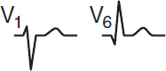 |
Initial depol. left to right across septum (r in V1 & q in V6; nb, absent in LBBB) followed by LV & RV free wall, with LV dominating (nb, RV depol. later and visible in RBBB). |
RBBB |
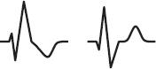 |
1. QRS ≥120 msec (110–119 msec = IVCD or “incomplete”) 2. rSR′ in R precordial leads (V1, V2) 3. Wide S wave in I and V6 4. ± ST↓ or TWI in R precordial leads |
LBBB |
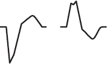 |
1. QRS ≥120 msec (110–119 msec = IVCD or “incomplete”) 2. Broad, slurred, monophasic R in I, aVL, V5–V6 (± RS in V5–V6 if cardiomegaly) 3. Absence of Q in I, V5, and V6 (may have narrow q in aVL) 4. Displacement of ST & Tw opposite major QRS deflection 5. ± PRWP, LAD, Qw’s in inferior leads |
Bifascicular block: RBBB + LAFB/LPFB. “Trifascicular block”: bifascicular block + 1° AVB.
Prolonged QT interval (NEJM 2008;358:169; www.torsades.org)
• Measure QT using threshold method (start of QRS to end of Tw at isoelectric line) or tangent (QRS to where tangent of Tw downslope intersects baseline) when long tail. Use longest QT (often V2 or V3) and omit U wave (Circ 2018;138:2345).
• QT varies w/ HR → corrected w/ Bazett formula: (RR in sec), overcorrects at high HR, undercorrects at low HR (nl QTc <450 msec ♂, <460 msec ♀)
• Fridericia’s formula preferred at very high or low 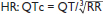
• QT prolongation a/w ↑ risk TdP (espec >500 msec); establish baseline QT and monitor if using QT prolonging meds, no estab guidelines for stopping Rx if QT prolongs
• Etiologies:
Antiarrhythmics: class Ia (procainamide, disopyramide), class III (amio, sotalol, dofet)
Psych drugs: antipsychotics (phenothiazines, haloperidol, atypicals), Li, ? SSRI, TCA
Antimicrobials: macrolides, quinolones, azoles, pentamidine, atazanavir
Other: antiemetics (droperidol, 5-HT3 antagonists), alfuzosin, methadone, ranolazine
Electrolyte disturbances: hypoCa (nb, hyperCa a/w ↓ QT), ± hypoK, ? hypoMg
Autonomic dysfxn: ICH (deep TWI), Takotsubo, stroke, CEA, neck dissection
Congenital (long QT syndrome): K, Na, & Ca channelopathies (Circ 2013;127:126)
Misc: CAD, CMP, bradycardia, high-grade AVB, hypothyroidism, hypothermia, BBB
Bundle Branch Blocks (Circ 2009;119:e235) |
||
ECG P-wave criteria |
Left Atrial Abnormality (LAA) 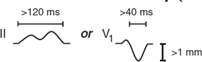 |
Right Atrial Abnormality (RAA) 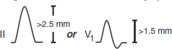 |
Left ventricular hypertrophy (LVH) (Circ 2009;119:e251)
• Etiologies: HTN, AS/AI, HCM, coarctation of aorta
• Criteria (all w/ Se <50%, Sp >85%; accuracy affected by age, sex, race, BMI)
Sokolow-Lyon: S in V1 + R in V5 or V6 ≥35 mm or R in aVL ≥11 mm (↓ Se w/ ↑ BMI)
Cornell: R in aVL + S in V3 >28 mm in men or >20 mm in women
Romhilt-Estes point-score system (4 points = probable; 5 points = diagnostic): ↑ volt: limb lead R or S ≥20 mm or S in V1 or V2 ≥30 mm or R in V5 or V6 ≥30 mm (3 pts)
ST displacement opposite to QRS deflection: w/o dig (3 pts); w/ dig (1 pt)
LAA (3 pts); LAD (2 pts); QRS duration ≥90 msec (1 pt)
Intrinsicoid deflection (QRS onset to peak of R) in V5 or V6 ≥50 msec (1 pt)
If LAFB present: S in III + max (R+S) in any lead ≥30 mm in men or ≥28 mm in women
Right ventricular hypertrophy (RVH) (Circ 2009;119:e251; JACC 2014;63:672)
• Etiologies: cor pulmonale, congenital (tetralogy of Fallot, TGA, PS, ASD, VSD), MS, TR
• Criteria [all insensitive, but specific (except in COPD); all w/ poor PPV in general population]
R >S in V1, R in V1 ≥6 mm, S in V5 ≥10 mm, S in V6 ≥3 mm, R in aVR ≥4 mm
RAD ≥110° (LVH + RAD or prominent S in V5 or V6 → consider biventricular hypertrophy)
Ddx of dominant R wave in V1 or V2
• Ventricular abnl: RVH (RAD, RAA, deep S waves in I, V5, V6); HCM; Duchenne’s
• Posterior MI: anterior R wave = posterior Q wave; often with IMI
• Abnormal depolarization: RBBB (QRS >120 msec, rSR′); WPW (↓ PR, δ wave, ↑ QRS)
• Other: dextroversion; counterclockwise rotation; lead misplacement; nl variant
Poor R wave progression (PRWP) (Am Heart J 2004;148:80)
• Definition: loss of anterior forces w/o frank Q waves (V1–V3); R wave in V3 ≤3 mm
• Etiologies: old anteroseptal MI (w/ R wave V3 ≤1.5 mm, ± persistent ST ↑ or TWI V2 & V3)
LVH (delayed RWP w/ ↑ left precordial voltage); RVH; COPD (may also have RAA, RAD, limb lead QRS amplitude ≤5 mm, SISIISIII w/ R/S ratio <1 in those leads)
LBBB; WPW; clockwise rotation of the heart; lead misplacement; CMP; PTX
Pathologic Q waves
• Definition: ≥30 msec (≥20 msec V2–V3) or >25% height of R wave in that QRS complex
• Small (septal) q waves in I, aVL, V5 & V6 are nl, as can be isolated Qw in III, aVR, V1
• “Pseudoinfarct” pattern may be seen in LBBB, infiltrative dis., HCM, COPD, PTX, WPW
ST elevation (STE) (NEJM 2003;349:2128; Circ 2009;119:e241 & e262)
• Acute MI: upward convexity STE (ie, a “frown”) ± TWI (or prior MI w/ persistent STE)
• Coronary spasm: Prinzmetal’s angina; transient STE in a coronary distribution
• Pericarditis: diffuse, upward concavity STE (ie, a “smile”); a/w PR ↓; Tw usually upright
• HCM, Takotsubo CMP, ventricular aneurysm, cardiac contusion
• Pulmonary embolism: occ. STE V1–V3; classically a/w TWI V1–V4, RAD, RBBB, S1Q3T3
• Repolarization abnormalities:
LBBB (↑ QRS duration, STE discordant from QRS complex; see “ACS” for dx MI in LBBB)
LVH (↑ QRS amplitude); Brugada syndrome (rSR′, downsloping STE V1–V2); pacing
Hyperkalemia (↑ QRS duration, tall Ts, no P’s); epsilon waves (late afterdepol.) in ARVC
• aVR: STE >1 mm a/w ↑ mortality in STEMI; STE aVR > V1 a/w left main disease
• Early repolarization: most often seen in V2–V5 in young adults (Circ 2016;133:1520)
1–4 mm elev of notch peak or start of slurred downstroke of R wave (ie, J point); ± up concavity of ST & large Tw (∴ ratio of STE/T wave <25%; may disappear w/ exercise)
? early repol in inf leads may be a/w ↑ risk of VF (NEJM 2009;361:2529; Circ 2011;124:2208)
• Post-ROSC: transient STE can be seen w/in 1st ~8 mins; not indicative of ACS
ST depression (STD)
• Myocardial ischemia (± Tw abnl)
• Acute true posterior MI: posterior STE appearing as anterior STD (± ↑ R wave) in V1–V3 ✓ posterior ECG leads; manage as a STEMI with rapid reperfusion (see “ACS”)
• Digitalis effect: downsloping ST ± Tw abnl; does not correlate w/ dig levels
• Hypokalemia (± U wave)
• Repolarization abnl a/w LBBB or LVH (usually in leads V5, V6, I, aVL, called “LV strain”)
T wave inversion (TWI; generally ≥1 mm; deep if ≥5 mm) (Circ 2009;119:e241)
• Ischemia or infarct; Wellens’ sign (deep, symm precordial TWI) → critical prox LAD lesion
• Myopericarditis; CMP (Takotsubo, ARVC, apical HCM); MVP; PE (espec if TWI V1–V4)
• Repolarization abnl in a/w LVH/RVH (“strain pattern”); BBB; nl variant if QRS predom. ⊖
• Posttachycardia or postpacing (“memory” T waves)
• Electrolyte, digoxin, PaO2, PaCO2, pH/core temp ∆’s, intracranial bleed (“cerebral Tw”)
Low voltage
• QRS amplitude (R + S) <5 mm in all limb leads & <10 mm in all precordial leads
• Etiol: COPD, pericardial/pleural effusion, myxedema, ↑ BMI, infiltrative CMP, diffuse CAD
Electrolyte abnormalities
• ↑ K: tented Tw, ↓ QT, ↑ PR, AVB, wide QRS, STE; ↓ K: flattened Tw, U waves, ↑ QT
• ↑ Ca: ↓ QT, flattened Tw & Pw, J point elevation; ↓ Ca: ↑ QT; Tw ∆s
ECG in young athletes (JACC 2017;69:805)
• Normal patterns may include LVH, RVH, early repolarization
• Evaluate if: arrhythmia, HR <30, ↑ QT, ε/δ waves, LBBB, Brugada pattern, QRS >140 ms, PR >400 ms, Mobitz II, 3˚ AVB, ST depression, TWI
Disorder |
Typical Characteristics & Diagnostic Studies |
Cardiovascular Causes |
|
Angina/ACS (<10% of chest pain in ED) |
Substernal “pressure” (⊕ LR 1.3) → neck, jaw, arm (⊕ LR 1.3–1.5) Sharp, pleuritic, positional, or reprod. w/ palp all w/ ⊕ LR ≤0.35 Diaphoresis (⊕ LR 1.4), dyspnea (⊕ LR 1.2), a/w exertion (⊕ LR 1.5–1.8) ≈ prior MI (⊕ LR 2.2); ↓ w/ NTG/rest (but not reliable; Annals EM 2005;45:581) ± ECG ∆s: STE, STD, TWI, hyperacute Tw, Qw. ± ↑ Troponin. |
Pericarditis & myo-pericarditis |
Sharp pain → trapezius, ↑ w/ respiration, ↓ w/ sitting forward. ± Pericardial friction rub. ECG ∆s (diffuse STE & PR ↓, opposite in aVR) ± pericardial effusion. If myocarditis, same as above + ↑ Tn and ± s/s HF and ↓ EF. |
Aortic dissection |
Sudden severe tearing pain (absence ⊖ LR 0.3). ± Asymm (>20 mmHg) BP or pulse (⊕ LR 5.7), focal neuro deficit (⊕ LR >6), AI, widened mediast. on CXR (absence ⊖ LR 0.3); false lumen on imaging. |
PE |
Sudden onset pleuritic pain. ↑ RR & HR, ↓ SaO2, ECG ∆s (sinus tach, RAD, RBBB, SIQIIITIII, TWI V1–V4, occ STE V1–V3), + CTA or V/Q, ± ↑ Tn. |
Pulm HTN |
Exertional pressure, DOE. ↓ SaO2, loud P2, RV heave, right S3 and/or S4. |
Pulmonary Causes |
|
Pneumonia |
Pleuritic; dyspnea, fever, cough, sputum. ↑ RR, crackles. CXR infiltrate. |
Pleuritis |
Sharp, pleuritic pain. ± Pleuritic friction rub. |
PTX |
Sudden onset, sharp pleuritic pain. Hyperresonance, ↓ BS. PTX on CXR. |
GI Causes |
|
Esoph reflux |
Substernal burning, acid taste in mouth, ↑ by meals. See “GERD.” |
Esoph spasm |
Intense substernal pain. ↑ by swallowing, ↓ by NTG/CCB. Manometry. |
Mallory-Weiss |
Esoph tear precipitated by vomiting. ± Hematemesis. Dx w/ EGD. |
Boerhaave |
Esoph rupture. Severe pain, ↑ w/ swallow. Mediastinal air palpable & on CT. |
PUD |
Epigastric pain, relieved by antacids. ± GIB. EGD, ± H. pylori test. |
Biliary dis. |
RUQ pain, N/V. ↑ by fatty foods. RUQ U/S, CT, MRCP; ↑ LFTs. |
Pancreatitis |
Epigastric/back discomfort. ↑ amylase & lipase; abdominal CT. |
Musculoskeletal and Miscellaneous Causes |
|
Costochond |
Localized sharp pain. ↑ w/ movement. Reproduced by palpation. |
Zoster |
Intense unilateral pain. Pain may precede dermatomal rash. |
Anxiety |
“Tightness,” dyspnea, palpitations, other somatic symptoms |
(Braunwald’s Heart Disease, 12th ed, 2022; JAMA 2015;314:1955)
Initial diagnostic studies
• Focused history: quality, severity, location, radiation; provoking/palliating factors; intensity at onset; duration, freq, & pattern; setting; assoc sx; cardiac hx & risk factors
• Targeted exam: VS (incl. BP in both arms); gallops, murmurs, rubs; signs of vascular dis. (carotid/femoral bruits, ↓ pulses) or CHF; lung & abd. exam; chest wall for reproducibility
• • 12-lead ECG: obtain w/in 10 min; comp to priors & obtain serial ECGs; consider posterior leads (V7–V9) if hx c/w ACS but stnd ECG unrevealing or ST ↓ V1–V3 & pain refractory
• Troponin: >99th %ile w/ rise and/or fall in approp. setting is dx of AMI (Circ 2018;138:e618)
High-sens Tn (hsTn) detectable 1 h after injury, peaks ~24 h, can be elevated for >1 wk
✓ at presentation & 1–3 h later; repeat if clinical or ECG ∆s; assess absolute level & Δ
Ddx: MI (type 1 [plaque rupture] or 2 [supply-demand mismatch not due to Δ in CAD), non-ischemic cardiac (eg, myocarditis, ADHF, Takotsubo, defibrillation, contusion), systemic illness (eg, PE, PHT, stroke, SAH, critical illness)
• CXR; other imaging (echo, PE CTA, etc.) as indicated based on H&P and initial testing
Initial approach (Circ 2021;144:e368)
• • R/o life-threatening causes (ACS, PE, AoD, myopericarditis, etc.)
• If possible ACS, risk stratify w/ clinician decision pathway (clinical factors + ECG + Tn)
• Low prob ACS (eg, H&P unconcerning, ⊖ ECG & Tn): d/c to home; risk factor mgmt
• Intermed prob ACS (neither low nor high clinical risk, ± borderline Tn): ✓ TTE and
If no known CAD → CCTA or stress (former ↓ LOS c/w fxnal testing; NEJM 2012;366:1393)
If recent mildly ⊕ stress or known non-obstructive CAD → CCTA
If obstructive but not high-risk CAD → stress test
If recent mod-severely ⊕ stress or high-risk CAD (LM, prox LAD, MVD) → invasive angio
• High prob ACS (eg, ECG Δs, ⊕ Tn, new ↓ LVEF): invasive coronary angiography
• Pts w/ acute CP: CCTA vs. stress testing → ↓ time to dx & LOS (less so in era of hsTn), but ↑ probability of cath/PCI (NEJM 2012;366:1393 & 367:299; JACC 2013;61:880)
Stress testing (J Nucl Cardiol 2016;23:606; EHJ 2020;41:407)
• Indications: evaluate possible CAD sx or ∆ in clinical status in Pt w/ known CAD, risk stratify after chest pain, evaluate exercise tolerance, localize ischemia (imaging required)
• Contraindications (Circ 2002;106:1883; & 2012;126:2465)
Absolute: AMI w/in 48 h, high-risk UA, acute PE, severe sx AS, uncontrolled HF, uncontrolled arrhythmias, severe HTN (SBP >200), myopericarditis, acute AoD
Relative (discuss with stress lab): left main CAD, mod symptomatic valvular stenosis, HCM w/ LVOT obstruction, high-degree AVB, severe electrolyte abnl
Exercise tolerance test (w/ ECG alone)
• Generally preferred if Pt can meaningfully exercise; ECG ∆s w/ Se ~65%, Sp ~80%
• Typically via treadmill w/ Bruce protocol (modified Bruce or submax if decond. or recent MI)
• Hold anti-isch. meds (eg, nitrates, βB) if dx’ing CAD but give to assess adequacy of meds
Pharmacologic stress test (nb, requires imaging because ECG not interpretable)
• Use if unable to exercise, low exercise tolerance, or recent MI. Se & Sp ≈ exercise.
• Preferred if LBBB, WPW or V-paced, because higher prob of false ⊕ imaging with exercise
• Coronary vasodilator: diffuse vasodilation → relative perfusion defect in vessels w/ fixed epicardial disease. Reveals CAD, but not if Pt ischemic w/ exercise. Regadenoson (↓ side effects), dipyridamole, adenosine. Side effects: flushing, ↓ HR, AVB, SOB, bronchospasm.
• Chronotropes/inotropes (dobuta): more physiologic, but longer test; may precip arrhythmia
Imaging for stress test
• Use if uninterpretable ECG (V-paced, LBBB, resting ST ↓ >1 mm, digoxin, LVH, WPW), after indeterminate ECG test, or if pharmacologic test
• Use when need to localize ischemia (often used if prior coronary revasc)
• Radionuclide myocardial perfusion imaging w/ images obtained at rest & w/ stress
SPECT (eg, 99mTc-sestamibi): Se ~85%, Sp ~80%
PET (rubidium-82): Se ~90%, Sp ~85%; requires pharmacologic stress, not exercise
ECG-gated imaging allows assessment of regional LV fxn (sign of ischemia/infarction)
• Echo (exercise or dobuta): Se ~80%, Sp ~85%; no radiation; operator dependent
Test results
• HR (must achieve ≥85% of max pred HR [220-age] for exer. test to be dx), BP response, peak double product (HR × BP; nl >20k), HR recovery (HRpeak – HR1 min later; nl >12)
• Max exercise capacity achieved (METS or min); occurrence of symptoms
• ECG ∆s: downsloping or horizontal ST ↓ (≥1 mm) 60–80 ms after QRS predictive of CAD (but does not localize ischemic territory); however, STE highly predictive & localizes
• Duke treadmill score = exercise min – (5 × max ST dev) – (4 × angina index) [0 none, 1 nonlimiting, 2 limiting]; score ≥5 → <1% 1-y mort; –10 to + 4 → 2–3%; ≤–11 → ≥5%
• Imaging: radionuclide defects or echocardiographic regional wall motion abnormalities
reversible defect = ischemia; fixed defect = infarct; transient isch dilation → ? severe 3VD
false ⊕: breast → ant defect; diaphragm → inf defect. False ⊖: balanced (3VD) ischemia.
High-risk test results (PPV ~50% for LM or 3VD, ∴ consider coronary angio)
• ECG: ST ↓ ≥2 mm or ≥1 mm in stage 1 or in ≥5 leads or ≥5 min in recovery; ST ↑; VT
• Physiologic: ↓ or fail to ↑ BP, <4 METS, angina during exercise, Duke score ≤–11; ↓ EF
• Radionuclide: ≥1 lg or ≥2 mod. reversible defects, transient LV cavity dilation, ↑ lung uptake
Myocardial viability (Circ CV Imaging 2020;13:e53)
• Goal: identify hibernating myocardium that could regain fxn after revascularization
• Options: MRI (Se ~95%, Sp ~50%), PET (Se ~90%, Sp ~65%), dobutamine stress
echo (Se ~80%, Sp ~80%); SPECT/rest-redistribution (Se ~85%, Sp ~65%)
• Pts w/ ischemic CMP (EF <35%), viability predicts ↑ EF w/ CABG but not survival or benefit of CABG vs. medical Rx (NEJM 2011;364:1617 & 2019;381:739)
Coronary CT angiography (JCCT 2021;15:192)
• Gated CT of heart timed during peak contrast enhancement in coronary arteries
• NTG given to dilate coronary arteries. β-blockers commonly used to lower HR.
• CT-FFR: uses computational fluid dynamics to estimate fxnal significance of focal lesions
• CAD-RADS score in stable CP improves risk stratif. of CV events (JACC Img 2020;13:1534)
• In stable outPt w/ CP: CCTA added to stnd of care → ↑ early but not overall angiography/revasc; ↑ use of preventive med Rx, and ↓ coronary death/MI by 5 y (NEJM 2018;379:924)
Coronary artery calcium (CAC) score
• Quantifies extent of calcium; thus, estimates plaque burden (but not % coronary stenosis)
• CAC sensitive (91%) but not specific (49%) for presence of CAD; high NPV to r/o CAD
• In intermediate-risk or selected borderline-risk adults (ie, 10-year ASCVD risk of 5–20%), if decision about statin remains uncertain, reasonable to use CAC score to help guide
Precath checklist
• Peripheral arterial exam (radial, femoral, DP, PT pulses; bruits); palmar arch eval (eg, w/ pulse oximetry & plethysmography) not routinely done. ✓ can lie flat × hrs, NPO >6 h.
• ✓ CBC, PT-INR (ideally ≤2), Cr; hold ACEI/ARB if renal dysfxn. Blood bank sample.
• ↓ risk of contrast-induced kidney injury: hold ACEI/ARB/ARNI, NSAIDs, diuretics. PreRx w/ isotonic IVF: data mixed, but may be helpful if high risk (Lancet 2017;389:1312).
• If iodinated contrast allergy, preRx w/ steroids & antihistamines
Vascular access
• Radial access preferred for coronary angiography: ↓ major bleeding & vascular complications, and possibly mortality benefit (Circ CI 2018;11:e000035)
• Femoral artery commonly used; high puncture ↑ risk of retroperitoneal bleed; low puncture ↑ risk of arterial complic. (eg, AV fistula, superficial femoral artery cannulation)
Periprocedural pharmacotherapy for PCI
• ASA 325 mg × 1. P2Y12 inhibitor: ticagrelor or prasugrel preferred over clopidogrel in ACS. Outside of STEMI, preRx load not recommended when anatomy unknown. Cangrelor (IV P2Y12 inhib) ↓ peri-PCI events vs. clopi w/o PreRx (NEJM 2013;368:1303).
• GP IIb/IIIa inhibitor: sometimes added if periprocedural thrombotic complication
• Anticoagulant: UFH or bivalirudin (if HIT) typically given during case and stopped at end
PCI and peri-PCI interventions
• Physiology: fractional flow reserve (FFR): ratio of max flow (induced by adenosine) distal vs. prox to stenosis to ID hemodyn. signif. lesions (≤0.80). Instantaneous wave-free ratio (iFR) similar, doesn’t require vasodilator; iFR threshold ≤0.89 (NEJM 2017;376:1813 & 1824).
• Advanced imaging: intravascular U/S (IVUS) or optical coherence tomography (OCT)
• Drug-eluting stents (DES): ↓ cardiac death, MI, repeat revasc, & stent thrombosis vs. BMS (Lancet 2019;393:2503). Balloon angioplasty alone reserved for lesions too narrow to stent.
Peri-PCI complications
• No or slow reflow: Rx with local delivery of vasodilators
• Coronary artery dissection: treat with stent
• Coronary perforation: immediate balloon tamponade, ✓ for effusion, seal w/ covered stent
Vascular access post-PCI complications
• Postprocedure ✓ vascular access site, distal pulses, ECG, CBC, Cr
• Bleeding: reverse/stop anticoag (d/w interventionalist); IV fluids/PRBC/plts as required
hematoma/overt bleeding: manual compression
retroperitoneal bleed: may p/w ↓ Hct ± flank or back pain. CT abd/pelvis (I–) or angio if unstable. If does not auto-tamponade, intravascular balloon and/or covered stent.
• Vascular damage (~1% of dx angio, ~5% of PCI; Circ 2007;115:2666)
pseudoaneurysm: triad of pain, expansile mass, systolic bruit; diagnose w/ U/S;
Rx (if pain or >2 cm): U/S-directed thrombin injection, surgical repair if former fails
AV fistula: continuous bruit; Dx: U/S; Rx: surgical repair if large or sx
limb ischemia (emboli, dissection, clot): cool, mottled extremity, ↓ distal pulses; Dx: loss of pulses, ↓ pulse volume recording, angio; Rx: percutaneous or surgical repair
radial artery occlusion: if sx, consider 4 weeks LMWH
Other complications (NEJM 2017;377:1513)
• Contrast-induced AKI: w/in 48 h, peak 3–5 d; pre-hydration reasonable (see “CIAKI”)
• Stroke: ~0.1–0.4% of cases. Usually ischemic from atheroembolic event during cath. Rx depends on sx/location/timing but includes thrombectomy, tPA, DAPT if ischemic.
• Cholesterol emboli syndrome: typically in Pts w/ large burden Ao atheroma; mesenteric ischemia (abd pain, LGIB, pancreatitis); intact distal pulses but livedo and toe necrosis
Stent post-PCI complications
• Stent thrombosis: acute clot formation in stent usually in 1st mo but can occur anytime. Typically p/w AMI. Often due to premature d/c antiplt Rx or mech prob. (stent underexpansion or unrecognized dissection, typically presents early).
• In-stent restenosis: develops in previously stented segment mos after PCI. Typically p/w gradual ↑ angina. Due to elastic recoil and neointimal hyperplasia; ↓ w/ DES.
Duration of dual antiplatelet therapy (JACC 2016;68:1082 & EHJ 2018;39:213)
• DAPT duration determined by patient presentation (ACS vs. SIHD), long-term ischemic risk (patient and procedural risk factors), and bleeding risk
• Antiplt Rx: DAPT (ASA 81 + P2Y12 inhib) in SIHD for 4 wk (BMS) or ≥6 mo (DES); in ACS (qv) for 12 mo and possibly beyond (JAMA Cards 2016;1:627). Data emerging for DAPT 1–3 mo, followed by P2Y12 inhib monotherapy (Circ 2020;142:538).
• If need long-term oral anticoag, consider clopi+DOAC and consider stopping ASA (? after ~1 wk) as ↓ bleed, but trend small ↑ ischemic risk (JAMA Cardiol. 2020;5:582)
Definition
• SIHD refers to asx and stably sx Pts as well as low-risk new-onset chest pain felt to be due to IHD, and excludes Pts w/ rapidly progressive sx or rest sx (ie, ACS)
Noninvasive testing (Circ 2012;126:e354 & 2021;144;e368)
• Noninvasive dx testing most valuable when pretest probability is intermediate (variably defined as anywhere from 30–70% to 10–90%)
• Several pretest probability scores that take into account age, sex, nature of sx, risk factors
• Exercise ECG testing or CAC reasonable in some low-risk Pts
• In intermediate/high-risk Pts, stress test w/ imaging or CCTA (see “Noninv Eval of CAD”)
• If known nonobstructive CAD & stable chest pain: stress testing or CCTA ± FFR
• If obstructive CAD & stable chest pain: stress testing or invasive angio if high-risk CAD
Coronary angiography for SIHD (Circ 2014;130:1749)
• High-risk noninvasive testing results suggestive of left main or multivessel CAD
• Angina that is refractory to optimal medical therapy
• Uncertain dx after noninvasive testing, occupational need (eg, pilot)
• Unexplained heart failure or ↓ EF
Major risk factor modification (Circ 2012;126:e354)
• Lipids: statin (typically high-intensity) ± ezetimibe & PCSK9i (see “Dyslipidemia”)
• BP <130/80 (see “Hypertension”); in SIHD may opt for ACEI and βB (if angina)
• Diabetes management (qv): HbA1c ≤7% and consider GLP1RA or SGLT2i
• Smoking cessation; influenza vaccine
• Diet (↑ vegetables, fruits, whole grains; ↓ saturated fat, trans fatty acids, sweets, red meat, Na); target BMI 18.5–24.9 kg/m2; 30–60 min mod-to-vigorous physical activity ≥5×/wk
Optimal medical therapy (OMT) (Circ 2012;126:e354)
• ASA 75–162 mg/d; can substitute clopi if ASA-intolerant. ~12 mos after PCI, clopi monoRx ↓ risk of ischemic and bleeding events by ~30% c/w ASA monoRx (Lancet 2021;397:2487).
• βB for 3 years post-MI or if ↓ EF; can consider in all Pts w/ SIHD
• ACEI (or ARB if intolerant of ACEI) if HTN, DM, CKD, or ↓ EF (Lancet 2006;368:581)
• Dual antiplatelet therapy (ASA + P2Y12 inhibitor): ↓ CV events by ~10% in Pts with known IHD w/o MI but w/ DM, but ↑ bleeding (THEMIS, NEJM 2019; 381:1309)
• Rivaroxaban 2.5 mg bid + ASA 100 mg/d: 24% ↓ CV events and 18% ↓ death vs. ASA alone, but ↑ major bleeding in stable ASCVD (COMPASS, NEJM 2017;377:1319)
• Colchicine (0.5 mg/d): ↓ CV events by 31%, but ? ↑ non-CV death (NEJM 2020;383:1838)
Medical therapies for symptomatic relief (Circ 2014;130:1749)
• Beta-blockers 1st-line therapy; CCB (except short-acting dihydropyridines)
• Long-acting nitrates
• Ranolazine (↓ late inward Na+ current to ↓ myocardial demand): 2nd-line anti-anginal
Revascularization (JAMA 2021;325:1765; Circ 2022;145:e18)
• OMT should be initial focus if stable & w/o evidence of critical anatomy & w/ normal EF
• Goal of revasc should be to ↓ risk of CV morbidity & mortality or to relieve refractory sx
• Older studies: survival benefit w/ revascularization (CABG) vs. medical Rx (pre-statin era) if: left main disease (≥50% stenosis); 3VD (≥70% stenoses) especially if ↓ EF, 2VD w/ critical proximal LAD, DM, ? 1–2 VD w/ large area of viable, ischemic myocardium
• More recent studies: revascularization (largely if not exclusively PCI) vs. OMT did not Δ risk of death, ↑ peri-PCI MI, and ± ↓ spontaneous MI (NEJM 2007;356:1503 & 2020;382:1395)
• In the most recent trial (ISCHEMIA, NEJM 2020;382:1395), which enrolled Pts w/ moderate-severe ischemia by noninvasive testing w/o LM disease and w/ preserved LVEF, revasc (~¾ PCI, ~¼ CABG) ↑ 5-yr rate of peri-procedural MI by ~2% and ↓ 5-yr rate of spontaneous MI by 3%. Nonsignificant ~1% lower rate of CV death by 5 yrs that appeared to start to emerge after 2 yrs. Magnitude of benefit tended to be greater in those with multivessel disease, proximal LAD disease, or diabetes.
• In Pts w/ CAD, HF, & LVEF <35%, CABG compared w/ medical Rx ↓ mortality by 16% and ↓ CV mortality by 21% after a median of 10 yrs (STICHES, NEJM 2016;374:1511)
• Thus, recommendations (Circ 2012;126:e354 & EHJ 2019;40:87) for revascularization include:
Indicated in: ≥50% left main stenosis, 3VD (≥70% stenoses), 2VD w/ proximal LAD, unacceptable angina despite OMT
Reasonable if: 2VD + extensive myocardial ischemia, MVD or proximal LAD disease + ↓ EF, proximal LAD disease + extensive ischemia, MVD + diabetes (if can get CABG)
• Trials of PCI vs. CABG in Pts w/ MVD or LM disease have shown CABG ↓ risk of spontaneous MI, repeat revascularization, ± death. These benefits appear greater in those with more complex coronary anatomy or with diabetes (Lancet 2018;391:939 & 2021;398:2247).
Spectrum of Acute Coronary Syndromes |
|||
Dx |
UA |
NSTEMI |
STEMI |
Coronary thrombosis |
Subtotal occlusion |
Total occlusion |
|
History |
Angina that is new-onset, crescendo or at rest; usually <30 min |
Angina at rest |
|
ECG |
± ST depression and/or TWI 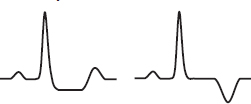 |
ST elevations 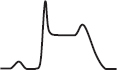 |
|
Troponin/CK-MB |
⊖ |
⊕ |
⊕ ⊕ |
Ddx (causes of myocardial ischemia/infarction other than atherosclerotic plaque rupture)
• Ischemia w/o plaque rupture (“type 2” MI): ↑ demand (eg, ↑ HR), ↓ supply (eg, HoTN). More likely in older, ♀, non-CAD comorbidities (CKD, etc.) (JACC 2021;77:848). Distinguishing from ACS is clinical dx; angiography is gold standard.
• Nonatherosclerotic coronary artery disease (JACC 2018;72:2231)
Spasm: Prinzmetal’s variant, cocaine-induced (6% of chest pain + cocaine use r/i for MI)
Dissection: spontaneous (vasculitis, CTD, pregnancy), aortic dissection with retrograde extension (usually involving RCA → IMI) or mechanical (PCI, surgery, trauma)
Embolism (Circ 2015;132:241): AF, thrombus/myxoma, endocard., prosth valve thrombosis
Vasculitis: Kawasaki syndrome, Takayasu arteritis, PAN, Churg-Strauss, SLE, RA
Congenital: anomalous origin from aorta or PA, myocardial bridge (intramural segment)
• Direct myocardial injury: myocarditis; Takotsubo/stress CMP; toxic CMP; cardiac contusion
Clinical manifestations (JAMA 2015;314:1955)
• Cardiac chest pain (“angina”): retrosternal pressure/pain/tightness ± radiation to neck, jaw, arms. Precipitated by exertion (physical or emotional), ↓ w/ rest or NTG. In ACS: new-onset, crescendo or at rest.
• Associated symptoms: dyspnea, diaphoresis, N/V, palpitations or light-headedness
• Nonclassic sx (incl N/V & epig pain) ? more common in ♀, elderly, diabetes, inf. ischemia
Physical exam (may be seen, but often are not)
• Signs of ischemia: S4, new MR murmur 2° pap. muscle dysfxn, paradoxical S2, diaphoresis
• Signs of HF (eg, if large MI or ischemic MR): ↑ JVP, crackles, ⊕ S3, HoTN, cool extremities
• Signs of other vascular disease: asymmetric BP, carotid or femoral bruits, ↓ distal pulses
Diagnostic studies (NEJM 2017;376:2053)
• ECG: ST ↓/↑, TWI, new LBBB, hyperacute Tw; Qw/PRWP may suggest prior MI & ∴ CAD
✓ ECG w/in 10 min of presentation, with any ∆ in sx & at 6–12 h; compare w/ baseline
• STEMI dx challenging w/ old LBBB or ventricular pacing:
Sgarbossa: ≥1 mm STE concordant w/ QRS (Se 73%, Sp 92%), STD ≥1 mm V1–V3 (Se 25%, Sp 96%), STE ≥5 mm discordant w/ QRS (Se 31%, Sp 92%)
Barcelona: ST deviation ≥1 mm concordant w/ QRS in any lead, or ST deviation ≥1 mm discordant w/ QRS in leads with max voltage (largest R or S) ≤6 mm (Se 93%, Sp 94%)
Localization of MI |
||
Anatomic Area |
ECG Leads w/ STE |
Coronary Artery |
Septal |
V1–V2 ± aVR |
Proximal LAD |
Anterior |
V3–V4 |
LAD |
Apical |
V5–V6 |
Distal LAD, LCx, or RCA |
Lateral |
I, aVL |
LCx |
Inferior |
II, III, aVF ± aVR |
RCA (~85%), LCx (~15%) |
RV |
V1–V2 & V4R (most Se) |
Proximal RCA |
Posterior |
ST depression V1–V3 (= STE V7–V9 posterior leads, ✓ if clinical suspicion) |
RCA or LCx |
If ECG non-dx & suspicion high, ✓ leads V7–V9 (⊕ if ≥0.5 mm STE) to assess distal LCx/RCA territory. ✓ R-sided precordial leads in IMI to detect RV involvement (STE in V4R most Se). STE in III >STE in II and lack of STE in I or aVL suggest RCA rather than LCx culprit in IMI. STE in aVR suggests LM, prox LAD, or diffuse ischemia.
• Cardiac biomarkers: ✓ Tn (pref. over CK-MB) at presentation & 3–6 h if stnd assay or 1 h later if high-sens assay; repeat if clinical or ECG ∆s. Universal definition of MI: >99th %ile w/ rise and/or fall in appropriate clinical setting (eg, sx, ECG ∆s, WMA on TTE, thrombus on coronary angiography).
• If low prob, stress test or CT angio to r/o CAD; new wall motion abnl on TTE suggests ACS
• Coronary angio gold standard for epicardial CAD
• Coronary spasm → transient STE usually w/o MI (but MI, AVB, VT can occur)
• Pts usually young, smokers, ± other vasospastic disorders (eg, migraines, Raynaud’s)
• Angiography: nonobstructive CAD (spasm can be provoked during cath but rarely done)
• Treatment: high-dose CCB & standing nitrates (+SL prn), ? α-blockers/statins; d/c smoking; avoid high-dose ASA (can inhibit prostacyclin and worsen spasm), nonselect βB, triptans
• Cocaine-induced vasospasm: CCB, nitrates, ASA; ? avoid βB, but labetalol appears safe
MI in absence of obstructive CAD (MINOCA)
• Definition: MI but w/o coronary stenosis ≥50% in any major epicardial vessel
• More common in younger Pts, women, Black/Pacific race or Hispanic
• Advanced coronary imaging (eg, OCT) & cardiac MRI to exclude missed coronary obstruction, other causes of myocyte injury (eg, myocarditis), other causes of ↑ Tn (eg, PE)
• ~75% ischemic (ie, plaque disruption identified) and 25% alternative dx (eg, myocarditis)
Likelihood of ACS (Circ 2007;116:e148; Circ 1994;90[1]:613-22) |
|||
Feature |
High (any of below) |
Intermediate (no high features, any of below) |
Low (no high/inter. features, may have below) |
History |
Chest or L arm pain like prior angina, h/o CAD (incl MI) |
Chest or arm pain, age >70 y, male, diabetes |
Atypical sx (eg, pleuritic, sharp or positional pain) |
Exam |
HoTN, diaphoresis, HF, transient MR |
PAD or cerebrovascular disease |
Pain reproduced on palp. |
ECG |
New STD (≥1 mm) TWI in mult leads |
Old Qw, STD (0.5-0.9 mm), TWI (>1 mm) |
TWF/TWI (<1 mm) in leads w/ dominant R wave |
Biomarkers |
⊕ Tn or CK-MB |
Normal |
Normal |
Acute Anti-Ischemic and Analgesic Treatment |
|
Nitrates (SL or IV) 0.3–0.4 mg SL q5min × 3, then consider IV if still sx |
Use for relief of sx, Rx for HTN or HF. No clear ↓ in mortality. Caution if preload-sensitive (eg, HoTN, AS, sx RV infarct); contraindicated if recent PDE5 inhibitor use. |
β-blockers eg, metop 25–50 mg PO q6h titrate slowly to HR 50–60 IV only if HTN and no HF |
↓ ischemia & progression of UA to MI (JAMA 1988;260:2259) STEMI: ↓ arrhythmic death & reMI, but high doses can ↑ cardiogenic shock early (espec if signs of HF) (Lancet 2005;366:1622) Contraindic. PR >0.24 sec, HR <60, 2°/3° AVB, severe bronchospasm, s/s HF or low output, risk factors for shock (eg, >70 y, HR >110, SBP <120, late presentation STEMI) |
CCB (nondihydropyridines) |
If cannot tolerate βB b/c bronchospasm |
Morphine |
Relieves pain/anxiety; venodilation ↓ preload. Do not mask refractory sx. May delay antiplt effects of P2Y12 inhib. |
Oxygen |
Use prn to keep SaO2 >90% (NEJM 2017;377:1240) |
Other early adjunctive therapy
• High-intensity statin therapy (eg, atorva 80 mg qd; PROVE-IT TIMI 22, NEJM 2004;350:1495); ↓ ischemic events w/ benefit emerging w/in wks (JAMA 2001;285:1711 & JACC 2005;46:1405); ↓ peri-PCI MI (JACC 2010;56:1099); ? ↓ contrast-induced nephropathy (NEJM 2019;380:2156)
• Ezetimibe: ↓ CV events when added to statin (IMPROVE-IT, NEJM 2015;372:2387)
• ACEI/ARB: start once hemodynamics and renal function stable (hold if anticipate CABG)
Strong indication for ACEI/ARB if heart failure, EF <40%, HTN, DM, CKD; ~10% ↓ mortality, greatest benefit in ant. STEMI or prior MI (Lancet 1994;343:1115 & 1995;345:669)
• IABP: can be used for refractory angina when PCI not available
NSTE-ACS (Circ 2014;130:e344; EHJ 2021;42:1289)
Key issues are antithrombotic regimen and decision regarding angiography
Antiplatelet Therapy |
|
Aspirin 162–325 mg × 1, then 81 mg qd (non–enteric-coated, chewable) |
50–70% ↓ D/MI (NEJM 1988;319:1105) Low dose (~81 mg) pref long term (NEJM 2010;363:930) If allergy, use clopi and/or desensitize to ASA |
P2Y12 (ADP receptor) inhibitor (choose one of the following in addition to ASA). Timing (on presentation or at angiography) remains controversial. |
|
• Ticagrelor (preferred over clopi) 180 mg × 1 → 90 mg bid Reversible, but wait 3–5 d prior to surg. Antidote being developed (NEJM 2019;380:1825). |
More rapid and potent plt inhib c/w clopi 16% ↓ CVD/MI/stroke & 21% ↓ CV death c/w clopi; ↑ non-CABG bleeding (NEJM 2009;361;1045) Given upstream or at time of PCI Dyspnea (but SaO2 & PFTs nl) & ventricular pauses |
• Prasugrel (preferred over clopi) 60 mg × 1 at PCI → 10 mg qd (consider 5 mg/d if <60 kg) Wait 7 d prior to surgery Contraindicated if h/o TIA/CVA; caution if >75 y |
More rapid and potent plt inhib c/w clopi 19% ↓ CVD/MI/stroke in ACS w/ planned PCI vs. clopi, but ↑ bleeding (NEJM 2007;359:2001), incl fatal bleeds In NSTE-ACS, should be given at time of PCI and not upstream due to ↑ bleeding (NEJM 2013;369:999) ? ↓ MACE vs ticagrelor (NEJM 2019;381:1524) |
• Clopidogrel 300–600 mg × 1 → 75 mg qd ~6 h to steady state Wait 5 d prior to surgery |
ASA+clopi → 20% ↓ CVD/MI/stroke vs. ASA alone. ~30% pop has ↓ fxn CYP2C19 → ↑ CV events if PCI on clopi (NEJM 2009;360:354). |
• Cangrelor* Only IV P2Y12 inhibitor Rapid onset/offset; t½ 3–5 min |
22% ↓ CV events (mostly peri-PCI MI and stent thrombosis) vs. clopi 300 mg at time of PCI; no significant ↑ bleeding (NEJM 2013;368:1303) Consider for rapidly reversible P2Y12 inhib peri-PCI or as bridge to surgery in high-risk Pts who need to stop P2Y12 |
GP IIb/IIIa inhibitors (GPI) abciximab; eptifibatide; tirofiban Infusions given ≤24 h peri & post PCI; shorter (~2 h) as effective w/ ↓ bleeding (JACC 2009;53:837) |
No clear benefit for routinely starting prior to PCI and ↑ bleeding (NEJM 2009;360:2176) Consider if refractory ischemia despite optimal Rx while awaiting angio or in high-risk Pts (eg, large clot burden) at time of PCI, espec if using clopi and no preRx. |
*Transition from cangrelor to oral P2Y12 inhib.: ticagrelor loading dose during infusion or immediately after d/c of infusion; prasugrel or clopidogrel loading dose only immediately after d/c of infusion.
Anticoagulant Therapy (choose one) |
|
UFH: 60 U/kg IVB (max 4000 U) then 12 U/kg/h (max 1000 U/h initially) × 48 h or until end of PCI |
24% ↓ D/MI (JAMA 1996;276:811) Titrate to aPTT 1.5–2× control (~50–70 sec) Hold until INR <2 if already on warfarin |
Enoxaparin (low-molec-wt heparin) 1 mg/kg SC bid (± 30 mg IVB) (qd if CrCl <30) × 2–8 d or until PCI |
~10% ↓ D/MI vs. UFH (JAMA 2004;292:45,89). Can perform PCI on enox (Circ 2001;103:658), but ↑ -bleeding if switch b/w enox and UFH. |
Bivalirudin (direct thrombin inhibitor) 0.75 mg/kg IVB at PCI → 1.75 mg/kg/h |
No diff in bleeding, MI, or death c/w UFH (NEJM 2017;377:1132). Use instead of UFH if HIT. |
Fondaparinux (Xa inh) 2.5 mg SC qd |
Rarely used; must supplement w/ UFH if PCI. |
Coronary angiography (Circ 2014;130:e344)
• Immediate/urgent coronary angiography (w/in 2 h) if refractory/recurrent angina or hemodynamic or electrical instability
• Routine angiography (aka “invasive strategy”) = coronary angiography for all
Early (w/in 24 h) if: ⊕ Tn, ST ∆, GRACE risk score >140 (NEJM 2009;360:2165; Circ 2018;138:2741)
Delayed (ie, w/in 72 h) acceptable if w/o above features but w/: diabetes, EF <40%, GFR <60, post-MI angina, TRS ≥3, GRACE score 109–140, PCI w/in 6 mo, prior CABG
32% ↓ rehosp for ACS, nonsignif 16% ↓ MI, no ∆ in mort. c/w select angio (JAMA 2008;300:71)
↑ peri-PCI MI counterbalanced by ↓↓ in spont. MI. Mortality benefit seen in some studies, likely only if cons. strategy w/ low rate of angio.
• Selective angiography (“conservative strategy”): med Rx w/ pre-d/c stress test; angio only if recurrent ischemia or strongly ⊕ ETT. Indicated for: low TIMI Risk Score, Pt or physician pref in absence of high-risk features, or low-risk women (JAMA 2008;300:71).
TIMI Risk Score (TRS) for UA/NSTEMI (JAMA 2000;284:835) |
|||
Calculation of Risk Score |
|
Application of Risk Score |
|
Characteristic |
Point |
Score |
D/MI/UR by 14 d |
Historical |
|
0–1 |
5% |
Age ≥65 y |
1 |
2 |
8% |
≥3 Risk factors for CAD |
1 |
3 |
13% |
Known CAD (stenosis ≥50%) |
1 |
4 |
20% |
ASA use in past 7 d |
1 |
5 |
26% |
Presentation |
|
6–7 |
41% |
Severe angina (≥2 episodes w/in 24 h) |
1 |
Higher risk Pts (TRS ≥3) derive ↑ benefit from LMWH, GP IIb/IIIa inhibitors and early angiography (JACC 2003;41:89S) |
|
ST deviation ≥0.5 mm |
1 |
||
⊕ cardiac marker (troponin, CK-MB) |
1 |
||
RISK SCORE = Total points |
(0–7) |
||
STEMI (Circ 2013;127:529; EHJ 2018;39:119)
Requisite STE (at J point)
• ≥2 contiguous leads w/ ≥1 mm (except for V2–V3: ≥2 mm in ♂ and ≥1.5 mm in ♀), or
• New or presumed new LBBB w/ compelling H&P, or
• True posterior MI: ST depression V1–V3 ± tall Rw w/ STE on posterior leads (V7–V9)
Reperfusion (“time is muscle”)
• In PCI-capable hospital, goal should be primary PCI w/in 90 min of 1st medical contact
• In non–PCI-capable hospital, consider transfer to PCI-capable hospital (see below), o/w fibrinolytic therapy w/in 30 min of hospital presentation
• Do not let decision regarding method of reperfusion delay time to reperfusion
Primary PCI (JACC 2013;61:e78 & 2016;67:1235)
• Definition: immediate PCI upon arrival to hospital or transfer for immediate PCI
• Indic: STE + sx onset w/in <12 h; ongoing ischemia 12–24 h after sx onset; shock
• Superior to lysis: 27% ↓ death, 65% ↓ reMI, 54% ↓ stroke, 95% ↓ ICH (Lancet 2003;361:13)
• Transfer to center for 1° PCI superior to lysis (NEJM 2003;349:733), see below
• PCI of non-culprit lesions (stenoses ≥70% or FFR ≤0.80 if 50–69%) early after event (during initial PCI, prior to or early after d/c) ↓ recurrent MACE, primarily recurrent MI vs. culprit alone (NEJM 2019;381:1411-21); may harm if cardiogenic shock (NEJM 2018;379:1699)
Fibrinolysis vs. Hospital Transfer for Primary PCI: Assess Time and Risk |
1. Time required for transport to skilled PCI lab: door-to-balloon <120 min & [door-to-balloon]–[door-to-needle] <1 h favors transfer for PCI |
2. Risk from STEMI: high-risk Pts (eg, shock) fare better with mechanical reperfusion |
3. Time to presentation: efficacy of lytics ↓ w/ ↑ time from sx onset, espec >3 h |
4. Risk of fibrinolysis: if high risk of ICH or bleeding, PCI safer option |
Adapted from ACC/AHA 2013 STEMI Guidelines (Circ 2013;127:529)
Fibrinolysis
• Indic: STE/LBBB + sx <12 h (& >120 min before PCI can be done); benefit if sx >12 h less clear; reasonable if persist. sx & STE, hemodynamic instability or large territory at risk
• Mortality ↓ ~20% in anterior MI or LBBB and ~10% in IMI c/w Ø reperfusion Rx
• Prehospital lysis (ie, ambulance): further 17% ↓ in mortality (JAMA 2000;283:2686)
• ~1% risk of ICH; high risk incl elderly (~2% if >75 y), ♀, low wt. ? PCI more attractive
Contraindications to Fibrinolysis |
|
Absolute Contraindications |
Relative Contraindications |
• Any prior ICH • Intracranial neoplasm, aneurysm, AVM • Ischemic stroke or closed head trauma w/in 3 mo; head/spinal surg. w/in 2 mo • Active internal bleeding or known bleeding diathesis • Suspected aortic dissection • Severe uncontrollable HTN • For SK, SK Rx w/in 6 mo |
• H/o severe HTN, SBP >180 or DBP >110 on presentation (? absolute if low-risk MI) • Ischemic stroke >3 mo prior • CPR >10 min; trauma/major surg. w/in 3 wk • Internal bleed w/in 2–4 wk; active PUD • Noncompressible vascular punctures • Pregnancy • Current use of anticoagulants • For SK, prior SK exposure |
• Rescue PCI if shock, unstable, failed reperfusion, or persistent sx (NEJM 2005;353:2758)
• Routine angio ± PCI w/in 24 h of successful lysis: ↓ D/MI/revasc (Lancet 2004;364:1045) and w/in 6 h ↓ reMI, recurrent ischemia, & HF compared to w/in 2 wk (NEJM 2009;360:2705);
∴ if lysed at non-PCI-capable hosp., consider transfer to PCI-capable hosp.. ASAP espec if high-risk (eg, ant. MI, IMI w/ ↓ EF or RV infarct, extensive STE/LBBB, HF, ↓ BP or ↑ HR)
• Late PCI (median day 8) of occluded infarct-related artery: no benefit (NEJM 2006;355:2395)
Antiplatelet Therapy |
|
Aspirin 162–325 mg × 1 (crushed/chewed) then 81 mg qd |
23% ↓ in death (Lancet 1988;ii:349) Should not be stopped if CABG required |
P2Y12 inhibitor Give ASAP (do not wait for angio) b/c onset inhib delayed in STEMI Pts Ticagrelor or prasugrel (if PCI) as detailed above Clopidogrel: 600 mg pre-PCI; 300 mg if lysis (no LD if >75 y) → 75 mg qd |
PCI: prasugrel and ticagrelor ↓ CV events c/w clopi (Lancet 2009;373:723 & Circ 2010;122:2131) Prehospital ticagrelor may be safe & ? ↓ rate of stent thrombosis (NEJM 2014;371:1016) Lysis: clopidogrel 41% ↑ in patency, 7% ↓ mort, no Δ major bleed or ICH (NEJM 2005;352:1179; Lancet 2005;366:1607); no data for pras or ticag w/ lytic |
GP IIb/IIIa inhibitors abciximab, eptifibatide, tirofiban |
Lysis: no indication (Lancet 2001;357:1905) Peri-PCI: 60% ↓ D/MI/UR (NEJM 2001;344:1895) |
(Circ 2013;127:529; NEJM 2021;384:452; JAMA 2021;325:1545)
Anticoagulant Therapy (choose one) |
|
UFH 60 U/kg IVB (max 4000 U) 12 U/kg/h (max 1000 U/h initially) |
No demonstrated mortality benefit ↑ patency with fibrin-specific lytics Titrate to aPTT 1.5–2× control (~50–70 sec) |
Enoxaparin Lysis: 30 mg IVB → 1 mg/kg SC bid (adjust for age >75 & CrCl) PCI: 0.5 mg/kg IVB |
Lysis: 17% ↓ D/MI w/ ENOX × 7 d vs. UFH × 2 d (NEJM 2006;354:1477) PCI: ↓ D/MI/revasc and ≈ bleeding vs. UFH (Lancet 2011;378:693) |
Bivalirudin 0.75 mg/kg IVB → 1.75 mg/kg/hr IV |
PCI: similar bleeding, ± ↑ MI, ↑ stent thromb, ↓ mortality in some but not all trials (Lancet 2014;384:599; JAMA 2015;313:1336; NEJM 2015;373:997) |
Fondaparinux can be used (if CrCl >30 mL/min) in setting of lysis, where superior to UFH w/ less bleeding (JAMA 2006;295:1519). Adapted from ACC/AHA 2013 STEMI Guidelines (Circ 2013;127:529; Lancet 2013;382:633).
LV failure (occurs in ~25%)
• Diurese to achieve PCWP ~14 → ↓ pulmonary edema, ↓ myocardial O2 demand
• ↓ Afterload → ↑ stroke volume & CO, ↓ myocardial O2 demand. Can use IV NTG or nitroprusside (although risk of coronary steal) → short-acting ACEI.
• Inotropes if HF despite diuresis & ↓ afterload; use dopamine, dobutamine, or milrinone
• Cardiogenic shock (~7%) = MAP <60 mmHg, CI <2.2 L/min/m2, PCWP >18 mmHg.
If not done already, coronary revasc (NEJM 1999;341:625)
Support w/ inotropes or mechanical circulatory support to keep CI >2
Intraaortic balloon pump (IABP) counterpulsation offers ~0.5 L/min CO and ↑ coronary perfusion, but no survival benefit if early revasc (NEJM 2012;367:1287)
Axial flow pumps (eg, Impella) offer up to 3–5 L/min CO, but no data that improves clinical outcomes (JACC 2017;69:278)
IMI complications (Circ 1990;81:401; NEJM 1994;330:1211; JACC 2003;41:1273)
• Heart block: ~20%, occurs in part because RCA typically supplies AV node
40% on present., 20% w/in 24 h, rest by 72 h; high-grade AVB can develop abruptly
Rx: atropine, epi, aminophylline (100 mg/min × 2.5 min), temp pacing wire
• RV infarct: proximal RCA occlusion → ↓ flow to RV marginals
Angiographically present in 30–50% of cases, but only ~½ clinically significant
HoTN; ↑ JVP, ⊕ Kussmaul’s; ≥1 mm STE in V4R; RA/PCWP ≥0.8; RV dysfxn on TTE
Rx: optimize preload (RA goal 10–14 mmHg; BHJ 1990;63:98); ↑ contractility (dobutamine); maintain AV synchrony (pacing as necessary); reperfusion (NEJM 1998;338:933); mechanical support (IABP or RVAD); pulmonary vasodilators (eg, inhaled NO)
Mechanical complications (incid. <1% for each; typically occur a few days post-MI)
• Free wall rupture: ↑ risk w/ lysis, large MI, ↑ age, ♀, HTN; p/w PEA or hypoTN, pericardial sx, tamponade; Rx: volume resusc., ? pericardiocentesis, inotropes, surgery
• VSD: large MI in elderly; AMI → apical VSD, IMI → basal septum; 90% w/ harsh murmur ± thrill (NEJM 2002;347:1426); Rx: diuretics, vasodil., inotropes, IABP, surgery, perc. closure
• Papillary muscle rupture: more common after IMI (PM pap m. supplied by PDA alone) than AMI (AL supplied by OMs & diags); 50% w/ new murmur; ↑ v wave in PCWP tracing; asymmetric pulmonary edema on CXR. Rx: diuretics, vasodilators, IABP, surgery.
Arrhythmias post-MI (treat all per ACLS protocols if unstable or symptomatic)
• AF (10–16% incidence): βB or amio, ± digoxin (particularly if HF), heparin
• VT/VF: lido or amio × 6–24 h, then reassess; ↑ βB as tol., replete K & Mg, r/o ischemia; VT <48 h post-MI does not worsen prognosis; >48 h, consider ICD (see below)
• Accelerated idioventricular rhythm (AIVR): slow ventricular rhythm (<120 bpm), often after reperfusion; typically asx, gradual onset/offset, and does not require treatment
• Backup transcutaneous or transvenous pacing if: 2° AVB type II; BBB + AVB
• Transvenous pacing if: 3° AVB; new BBB + 2° AVB type II; alternating LBBB/RBBB
Other Post-MI Complications |
||
Complication |
Clinical Features |
Treatment |
LV thrombus |
~30% incid. (espec lg antero-apical MI) |
AC×3-6 mo (? warfarin pref) |
Ventricular aneurysm |
Noncontractile outpouching of LV; 8–15% incid. (espec ant); persist STE |
Surgery or perc repair if HF, thromboemboli, arrhythmia |
Ventricular pseudoaneurysm |
Rupture (narrow neck) → sealed by thrombus and pericardium (esp in inf). |
Urgent surgery (or percutaneous repair) |
Pericarditis |
10–20% incid.; 1–4 d post-MI ⊕ pericardial rub; ECG Δs rare |
High-dose ASA, colchicine, narcotics; minimize anticoag |
Dressler’s syndrome |
<4% incid.; 2–10 wk post-MI fever, pericarditis, pleuritis |
High-dose aspirin, NSAIDs |
CHECKLIST AND LONG-TERM POST-ACS MANAGEMENT
Risk stratification
• Stress test if anatomy undefined; consider stress if signif residual CAD post-PCI of culprit
• Assess LVEF prior to d/c; EF ↑ ~6% in STEMI over 6 mo (JACC 2007;50:149)
Antiplatelet therapy
• Aspirin: 81 mg daily (no clear benefit to higher doses)
• P2Y12 inhibitor: ticagrelor or prasugrel preferred over clopi. In landmark analyses, benefit over clopidogrel both early & late. De-escalation (ticag → clopi or pras 10 → 5 mg) after 1 mo ↓ bleeding w/o clear ↑ MACE, but wide CIs (Lancet 2020;396:1079 & 2021;398:1305).
• Duration controversial. Traditionally ASA lifelong and P2Y12 inhib for 12 mos. Prolonged P2Y12 inhib >12 mos → ↓ MACE but ↑ bleeding (NEJM 2014;371:2155 & 2015;372:1791). Consider if high ischemic and low bleeding risk. Shorter duration (eg, 3–6 mo) if converse or if require major surgery. D/c ASA after 1–3 mos and continuing P2Y12 inhib monoRx (preferably ticagrelor) ↓ bleeding with no ↑ MACE (Circ 2020;142:538).
Anticoagulation
• If need therapeutic a/c (eg, AF) in addition to anti-plt Rx, consider full-dose apixa + P2Y12 (typically clopi) and d/c ASA at time of hospital d/c (NEJM 2019;380:1509)
• In Pts w/o indic. for anticoag, once DAPT completed, rivaroxaban 2.5 bid + ASA ↓ MACE & CV death and ↑ bleeding vs. ASA monoRx (NEJM 2017;377:1319)
Other CV drugs
• β-blocker: 23% ↓ mortality after MI (benefit beyond 3 yrs less clear)
• ACEI/ARB: lifelong if HF, ↓ EF, HTN, DM; 4–6 wk or at least until hosp. d/c in all STEMI. Trend toward ARNI better than ACEI in post-MI Pts w/ ↓ EF (NEJM 2021;385:1845).
? long-term benefit of ACEI/ARB in CAD w/o HF (NEJM 2000;342:145)
• Aldosterone antag: 15% ↓ mort. if EF <40% & either s/s of HF or DM (NEJM 2003;348:1309)
• Nitrates: standing if symptomatic; SL NTG prn for all
• Ranolazine: ↓ recurrent ischemia, no impact on CVD/MI (JAMA 2007;297:1775)
• Low dose colchicine ↓ CV events post MI but ? ↑ PNA (NEJM 2019; 381:2497)
Risk factors and lifestyle modifications (Circ 2019;139:e1082 & EHJ 2020;41:111)
• LDL-C: goal <70 mg/dL (U.S) or <55 (Europe) or even <40 if recurrent events
Statin: high-intensity (eg, atorva 80 mg, PROVE-IT TIMI 22, NEJM 2004;350:1495)
Ezetimibe: ↓ CV events when added to statin (IMPROVE-IT, NEJM 2015;372:1500)
PCSK9 inhibitor: ↓ CV events when added to statin (NEJM 2017;376:1713; 2018;379:2097)
• BP <140/90 and <130/80; quit smoking
• If diabetic, GLP1-RA ↓ MACE & SGLT2i ↓ hospitalization for HF (Lancet D&E 2019;7:776 & Lancet 2019;393:31); further tailor HbA1c goal based on Pt (avoid TZDs and saxa if HF)
• Exercise (30–60′ 5–7×/wk) 1–2 wk after revasc; cardiac rehab; BMI goal 18.5–24.9 kg/m2
• Influenza & S. pneumo vaccines (Circ 2021;144:14764 NEJM 2018;378:345); ✓ for depression
ICD (Circ 2018;138:e272)
• Sust. VT/VF >2 d post-MI w/o revers. isch; ? ↓ death w/ wearable defib (NEJM 2018;379:1205)
• 1° prevention of SCD if post-MI EF ≤30–40% (NYHA II–III) or ≤30–35% (NYHA I); wait 40 d after MI (NEJM 2004;351:2481 & 2009;361:1427)
Rationale
• Cardiac output (CO) = SV × HR; optimize SV (and thereby CO) by manipulating preload/ LVEDV (w/ IVF, diuretics), contractility (w/ inotropes), & afterload (w/ vasodilators)
• Balloon at catheter tip inflated → floats into “wedge” position. Column of blood extends from tip of catheter, through pulm venous circulation to a point just prox to LA. Under conditions of no flow, PCWP ≈ LA pressure ≈ LVEDP, which is proportional to LVEDV.
• Situations in which these basic assumptions fail:
(1) Catheter tip not in West lung zone 3 (and ? PCWP = alveolar pressure ≠ LA pressure); clues include lack of a & v waves and if PA diastolic pressure < PCWP
(2) PCWP >LA pressure (eg, mediastinal fibrosis, pulmonary VOD, PV stenosis)
(3) Mean LA pressure >LVEDP (eg, MR, MS)
(4) ∆ LVEDP-LVEDV relationship (ie, abnl compliance, ∴ “nl” LVEDP may not be optimal)
Indications (NEJM 2013;369:e35; Circ 2017;136:e268)
• Diagnosis and evaluation
Ddx of shock (cardiogenic vs. distributive; espec if trial of IVF failed or is high risk) and of pulmonary edema (cardiogenic vs. not; espec if trial of diuretic failed or is high risk)
Evaluation of CO, intracardiac shunt, pulm HTN, MR, tamponade, cardiorenal syndrome
Evaluation of unexplained dyspnea (PAC during provocation w/ exercise, vasodilator)
• Therapeutics (Circ 2017;136:e232)
Tailored therapy to optimize PCWP, SV, SMVO2, RAP, PVR in heart failure or shock
Guide to vasodilator therapy (eg, inhaled NO, nifedipine) in PHT, RV infarction
Guide periop mgmt in some high-risk Pts, candidacy for mech circ support & transplant
• Contraindications
Absolute: right-sided endocarditis, thrombus/mass or mechanical valve; proximal PE
Relative: coagulopathy (reverse), recent PPM or ICD (place under fluoroscopy), LBBB (~5% risk of RBBB → CHB, place under fluoro), bioprosthetic R-sided valve
Efficacy concerns (NEJM 2006;354:2213; JAMA 2005;294:1664)
• No benefit to routine PAC use in high-risk surgery (JACC 2014;62:e77), sepsis, ARDS
• No benefit in decompensated HF (JAMA 2005;294:1625); untested in cardiogenic shock
• But: ~½ of clinical CO & PCWP estimates incorrect; CVP & PCWP not well correl.; ∴ use PAC to (a) answer hemodynamic ? and then remove, or (b) manage cardiogenic shock
Placement (NEJM 2013;369:e35)
• Insertion site: R IJ or L subclavian veins preferred for “anatomic” flotation into PA
• Inflate balloon (max 1.5 cc, mindful of resistance) when advancing and to measure PCWP
• Deflate the balloon when withdrawing and at all other times
• CXR should be obtained after placement to assess for catheter position and PTX
• If catheter cannot be floated (i.e., severe TR, RV dilatation), consider fluoroscopic guidance
Complications
• Central venous access: pneumo/hemothorax (~1%), arterial puncture (if inadvertent cannulation w/ dilation → surgical/endovasc eval), air embolism, thoracic duct injury
• Advancement: atrial or ventricular arrhythmias (3% VT; 20% NSVT and >50% PVC), RBBB (5%), catheter knotting, cardiac perforation/tamponade, PA rupture
• Maintenance: infection (espec if catheter >3 d old), thrombus, pulm infarction (≤1%), valve/chordae damage, PA rupture/pseudoaneurysm (espec w/ PHT), balloon rupture
Intracardiac pressures
• Transmural pressure (≈ preload) = measured intracardiac pressure – intrathoracic pressure
• Intrathoracic pressure (usually slightly ⊖) is transmitted to vessels and heart
• Always measure intracardiac pressure at end-expiration, when intrathoracic pressure closest to 0 (“high point” in spont. breathing Pts; “low point” in Pts on ⊕ pressure vent.)
• If ↑ intrathoracic pressure (eg, PEEP), measured PCWP overestimates true transmural pressures. Can approx by subtracting ~½ PEEP (× ¾ to convert cm H2O to mmHg).
• PCWP: LV preload best estimated at a wave; risk of pulm edema driven by avg PCWP
Cardiac output
• Thermodilution: saline injected in RA or intermittent heating of prox thermal filament in some PA lines (“continuous CO”). ∆ in temp over time measured at thermistor (in PA) used to calc CO. Inaccurate if ↓ CO, severe TR, or shunt.
• Fick method: O2 consumption (L/min) = CO (L/min) × ∆ arteriovenous O2 content ∴ CO = O2/C(a-v)O2
O2 ideally measured (esp. if ↑ metab demands), but freq estimated (125 mL/min/m2)
C(a-v)O2 = [10 × 1.36 mL O2/g of Hb × Hb g/dL × (SaO2 – SMVO2)]. SMVO2 is key var that ∆s.
If SMVO2 >80%, consider if the PAC is “wedged” (ie, pulm vein sat), L→R shunt, impaired O2 utilization (severe sepsis, cyanide, carbon monoxide), ↑↑ CO or FiO2.
PCWP waveform abnormalities: large a wave → ? mitral stenosis; large v wave → ? mitral regurgitation; blunted y descent → ? tamponade; steep x & y descents → ? constriction.
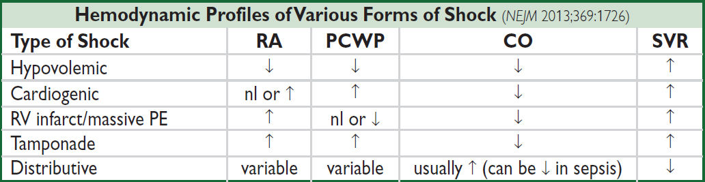
Surrogates: RA ≈ JVP (1 mmHg = 1.36 cm H2O); pulmonary edema on CXR implies ↑ PCWP; UOP ∝ CO (barring AKI); delayed capillary refill (ie, >2–3 sec) implies ↑ SVR
Tailored therapy in cardiogenic shock (Circ 2009;119:e391)
• Goals: optimize both MAP and CO while ↓ risk of pulmonary edema
MAP = CO × SVR; CO = HR × SV (which depends on preload, afterload, and contractility)
pulmonary edema when PCWP >20–25 (↑ levels may be tolerated in chronic HF/MS)
hepatic and renal congestion (↓ GFR) occur when CVP/RAP >15 mmHg
• Optimize preload = LVEDV ≈ LVEDP ≈ LAP ≈ PCWP (NEJM 1973;289:1263)
goal PCWP ~14–18 in acute MI, 14 in acute decompensated HF
optimize in individual Pt by measuring SV w/ different PCWP to create Starling curve
↑ by giving crystalloid (albumin w/o clinical benefit over NS; PRBC if significant anemia)
↓ by diuresis (qv), ultrafiltration or dialysis if refractory to diuretics or ESRD
• Optimize afterload ≈ wall stress during LV ejection = [(~SBP × radius) / (2 × wall thick.)] and ∴ ∝ MAP and ∝ SVR = (MAP – CVP / CO); goals: MAP >60, SVR 800–1200
MAP >60 (& ∴ SVR ↑): vasodilators (eg, nitroprusside, NTG, ACEI, hydral.) or wean pressors
MAP <60 (& ∴ SVR low/nl, ie, inappropriate vasoplegia): start with inopressor (eg, norepinephrine [α > β], dopamine [β → α w/ ↑ doses], epi [β > α at low doses]); better outcomes w/ norepi than dopa even in cardiogenic shock (NEJM 2010;362:779)
• Optimize contractility ∝ CO for given preload & afterload; goal CI = (CO / BSA) >2.2 if too low despite optimal preload & vasodilators (as MAP permits):
⊕ inotropes: eg, dobutamine (mod inotrope & mild vasodilator) or milrinone (strong inotrope & vasodilator, incl pulm), both proarrhythmic, or epi (strong inotrope & pressor)
mech circulatory support (L/min): IABP (0.5), Impella (3.7–5.5), TandemHeart (5), VAD (L-sided, R-sided or both; temp or perm; 10) or ECMO (6) (JACC 2021;77:1243)
Definitions (Braunwald’s Heart Disease, 12th ed., 2022)
• Failure of heart to pump blood forward at rate sufficient to meet metabolic demands of peripheral tissues, or ability to do so only at abnormally high cardiac filling pressures
• Low output (↓ cardiac output) vs. high output (↑ stroke volume ± ↑ cardiac output)
• Left-sided (pulmonary edema) vs. right-sided (↑ JVP, hepatomegaly, peripheral edema)
• Backward (↑ filling pressures, congestion) vs. forward (impaired systemic perfusion)
• Systolic (inability to expel sufficient blood) vs. diastolic (failure to relax and fill normally)
• Reduced (HFrEF, EF <40%), mildly reduced (HFmrEF, EF 40–49%), & preserved (HFpEF, EF >50%); combination of systolic and diastolic dysfxn may occur regardless of EF
History
• Low output: fatigue, weakness, exercise intolerance, ∆ MS, anorexia
• Congestive: left-sided → dyspnea, orthopnea, paroxysmal nocturnal dyspnea
right-sided → peripheral edema, RUQ discomfort, bloating, satiety
Functional classification (New York Heart Association class)
• Class I: no sx w/ ordinary activity; class II: sx w/ ordinary activity; class III: sx w/ minimal activity; class IV: sx at rest
Physical exam (“2-minute” hemodynamic profile; JAMA 1996;275:630 & 2002;287:628)
• Congestion (“dry” vs. “wet”): ↑ JVP (~80% of the time JVP >10 → PCWP >22)
⊕ hepatojugular reflux: ≥3 cm ↑ in JVP for ≥10–15 sec w/ abdominal pressure Se/Sp 73/87% for RA >8 and Se/Sp 55/83% for PCWP >15 (AJC 1990;66:1002)
Abnl Valsalva response: square wave (↑ SBP w/ strain), no overshoot (no ↑ BP after strain)
S3 (in Pts w/ HF → ~40% ↑ risk of HF hosp. or pump failure death; NEJM 2001;345:574)
Rales, dullness at base 2° pleural effus. (often absent in chronic HF due to lymphatic compensation) ± hepatomegaly, ascites and jaundice, peripheral edema
• Perfusion (“warm” vs. “cold”)
narrow pulse pressure (<25% of SBP) → CI <2.2 (91% Se, 83% Sp; JAMA 1989;261:884);
soft S1 (↓ dP/dt), pulsus alternans, cool & pale extremities, ↓ UOP, muscle atrophy
• ± Other: Cheyne-Stokes resp., abnl PMI (diffuse, sustained or lifting depending on cause of HF), S4 (diast. dysfxn), murmur (valvular dis., ↑ MV annulus, displaced papillary muscles)
Evaluation for the presence of heart failure
• CXR (see Radiology insert): pulm edema, pleural effusions ± cardiomegaly, cephalization, Kerley B-lines; lung U/S better than CXR (PPV & NPV 92% vs. 77%; Chest 2015;148:202)
• BNP/NT-proBNP can help exclude HF; levels ↑ w/ age, renal dysfxn, AF; ↓ w/ obesity Se ≥95%, Sp: ~50%, PPV ~65%, NPV ≥ 94% for HF in Pts p/w SOB (BMJ 2015;350:h910)
• Evidence of ↓ organ perfusion: ↑ Cr, ↓ Na, abnl LFTs
• Echo (see inserts): ↓ EF & ↑ chamber size → systolic dysfxn; hypertrophy, abnl MV inflow, abnl tissue Doppler → ? diastolic dysfxn; abnl valves or pericardium; ↑ estimated RVSP
• PA catheterization: ↑ PCWP, ↓ CO, and ↑ SVR (in low-output failure)
Evaluation for the potential causes of heart failure
• ECG: evidence for CAD, LVH, LAE, heart block or low voltage (? infiltrative CMP/DCM)
• TTE: LV & RV size & fxn, valve abnl (cause or consequence?), infiltrative or pericardial dis.
• Cardiac MRI: distinguishes ischemic vs. nonischemic and can help determine etiol. of latter
• Coronary angio (or noninvasive imaging, eg, CT angio); if no CAD, w/u for NICM
Precipitants of acute heart failure
• Dietary indiscretion or medical nonadherence (~40% of cases)
• Myocardial ischemia or infarction (~10–15% of cases); myocarditis
• Renal failure (acute, progression of CKD, or insufficient dialysis) → ↑ preload
• Hypertensive crisis (incl. from RAS), worsening AS → ↑ left-sided afterload
• Drugs (βB, CCB, NSAIDs, TZDs), chemo (anthracyclines, trastuzumab), or toxins (EtOH)
• Arrhythmias; acute valvular dysfxn (eg, endocarditis), espec mitral or aortic regurgitation
• COPD/PE → ↑ right-sided afterload; extreme stress; anemia; systemic infxn; thyroid dis.
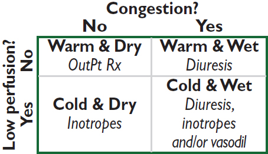
Rx of acute decompens. HF (NEJM 2017;377:1964)
• Assess congestion & adequacy of perfusion
• For congestion: “LMNOP”
Lasix IV; 1–2.5× usual total daily PO dose Ø clear diff between gtt vs. q12h IV
Morphine (↓ sx, venodilator, ↓ afterload)
Nitrates (venodilator)
Oxygen ± noninvasive ventilation
Position (sitting up & legs dangling over side of bed → ↓ preload)
• For low perfusion, see below
• Adjustment of home oral meds: prefer to continue, except:
ACEI/ARB/ARNI: hold or ↓ dose if HoTN; ∆ to hydralazine & nitrates w/ AKI
βB: hold if evidence of hypoperfusion or HoTN
Treatment of acute advanced heart failure (Circ 2013;128:e240)
• Consider PAC if not resp to Rx, unsure re: vol status, HoTN, hypoperfusion, need inotropes
• Tailored Rx w/ PAC (qv); goals of MAP >60, CI >2.2 (MVO2 >60%), SVR <800, PCWP <18
• IV vasodilators: NTG, nitroprusside (risk of coronary steal if CAD)
• Inotropes (properties in addition to ↑ inotropy listed below)
dobutamine: vasodilation at doses ≤5 µg/kg/min; mild ↓ PVR; desensitization over time
dopamine: splanchnic vasodil. → ↑ GFR & natriuresis; vasoconstrictor at ≥5 µg/kg/min
milrinone: prominent systemic & pulmonary vasodilation; ↓ dose by 50% in renal failure
• Mechanical circulatory support (also see “Tailored Therapy;” JACC 2015;65:e7 & 2542)
Temporary: bridge to recovery, transplant, or durable MCS; periprocedural support
Intra-aortic balloon pump (IABP): inflates in diastole & deflates in systole to ↓ impedance to LV ejection, ↓ myocardial O2 demand & ↑ coronary perfusion; +0.5 L/min CO
Axial flow pumps (eg, Impella): Archimedes screw principle in LV; +3.7–5.5 L/min
Extracorporeal centrifugal pumps: TandemHeart (+5 L/min, percutaneous) & CentriMag (10 L/min, surgical)
Extracorporeal membrane oxygenation (ECMO): 6 L/min (JACC HF 2018;6:503)
Durable: surgically placed LVAD ± RVAD as bridge to sufficient recovery (in 5–50% of niCMP; JACC 2017;69:1924), to transplant or as destination Rx (>50% ↓ 1-y mort. vs. med Rx; NEJM 2001;345:1435 & 2009;361:2241). Current preferred option is fully magnetically levitated centrifugal flow pump (HeartMate 3), ↓ stroke or re-op vs. axial flow models (NEJM 2019;380:1618).
• Cardiac transplantation: ~2200/yr in U.S. <10% mort. in 1st y, median survival ~13 y
Recommended Chronic Therapy by HF Stage (JACC 2021;77:772) |
||
Stage (not NYHA Class) |
Therapy |
|
A |
At risk for HF (eg, HTN); but asx & w/o struct. dis. |
Rx HTN, lipids, DM; stop smoking, EtOH; ↑ exercise ACEI/ARB if HTN/DM/CAD/PAD |
B |
⊕ Struct. heart dis. (eg, CMP, LVH), but asx |
As per stage A + ACEI/ARB + βB if MI/CAD or ↓ EF. ? ICD. |
C |
⊕ Struct. heart dis. ⊕ Any h/o Sx of HF |
As per stage A + diuretics, ↓ Na. If ↓ EF: ARNI, ACEI or ARB; βB; aldo antag; SGLT2i; ICD; ? CRT; ± nitrate/hydral; ± dig. If preserved EF: ? ARNI; ? aldo antag; SGLT2i |
D |
Refractory HF requiring specialized interventions |
All measures for stages A–C. Consider IV inotropes, VAD, transplant, end-of-life care (4-y mortality >50%) |
• Utility of BNP-guided Rx (inPt and outPt) remains debated (Eur Heart J 2014;35:16)
• Implantable PA pressure sensor in sx Pts: ~19–37% ↓ risk of hosp (Lancet 2016;387:453 & 2021;398:991)
(Circ 2013;128:e240 & 2016;134:e282; EHJ 2016;37:2129)
Heart failure with preserved EF (HFpEF; “Diastolic HF”) (JACC 2022;epub)
• Epidemiology: ~½ of Pts w/ HF have normal (EF ≥50%); risk factors for HFpEF incl ↑ age, ♀, DM, AF. Mort ≈ to those w/ HFrEF.
• Etiologies (impaired relaxation and/or ↑ passive stiffness): ischemia, prior MI, LVH, HCMP, infiltrative CMP, RCMP, aging, hypothyroidism
• Precipitants of pulmonary edema: volume overload (poor compliance of LV → sensitive to small ↑ in volume); ischemia (↓ relaxation); tachycardia (↓ filling time in diastole), AF (loss of atrial boost to LV filling); HTN (↑ afterload → ↓ stroke volume)
• Dx w/ clinical s/s of HF w/ preserved systolic fxn. Dx supported by evidence of diast dysfxn:
(1) echo: impaired relaxation using tissue Doppler (eg, e′ <9 cm/s), high filling pressures ± impaired relaxation (eg, E/e′ ≥15), large left atrium
(2) exercise-induced ↑ PCWP ± inadequate ↑ stroke volume or CO
• Treatment: diuresis, Rx HTN, tachycardia, and ischemia
SGLT2i ↓ CV death or HF hosp (NEJM 2021;385:1451; DELIVER)
Nonsignficiant trends toward benefit for ARB vs. placebo. ARNI ↓ CV death or hosp for HF in HFpEF Pts w/ LVEF <60% (NEJM 2019; 381:1609)
Spironolactone likely ↓ HF hospitalization (NEJM 2014;370:1383; Circ 2015;131:34)
Diseases with mechanical and/or electrical dysfunction of the myocardium
DILATED CARDIOMYOPATHY (DCM)
Definition and epidemiology (JACC 2016;67:2996; Lancet 2017;390:400)
• LV or biventricular dilatation and global ↓ contractility ± ↓ wall thickness in the absence of ischemia/infarct, valvular disease or HTN. Pts w/ prior MI complicated by LV dilation and ↓ EF are often termed “ischemic CMP.”
Etiologies (JACC 2021;77:2551; can also be prior myocarditis, vide infra)
• Familial/genetic (>35%): Pt & ≥2 closely related family members w/ unexplained DCM; ~30 genes identified to date, encoding structural & nuclear proteins (eg, titin)
• Idiopathic (<20%): ? undx infectious, EtOH, or genetic cause; ¼ w/ e/o DCM in relative
• Toxic: alcohol (~20%) typ. 7–8 drinks/d × >5 y, but variable; cocaine; XRT (usu RCMP);
anthracyclines (risk ↑ >550 mg/m2, may manifest late), CYC, trastuzumab, TKIs.
• Infiltrative (5%): typically RCMP (qv), but can be DCMP with thickened walls; amyloidosis, sarcoidosis, hemochromatosis, tumor
• Peripartum (onset last mo → 5 mo postpartum; JACC 2020;75:207): ~1:2000; ↑ risk w/ multip, ↑ age, Afr Am; stnd HF Rx (if preg, no ACEI or spironolact.); ~30% recur w/ next preg
• Stress-induced (Takotsubo = apical ballooning): typically postmenopausal ♀; mimics MI (chest pain, ± STE & ↑ Tn; deep TWI & ↑ QT); mid/apex dyskinesis; ? Rx w/ βB, ACEI; usu. improves over wks (JAMA 2011;306:277). In-hosp morb/mort similar to ACS (NEJM 2015;373:929).
• Tachycardia (JACC 2019;73:2328): likelihood ∝ rate/duration; often resolves w/ rate cntl
• Arrhythmogenic right ventricular cardiomyopathy (ACM/ARVC): fibrofatty replacement of RV → dilation (dx w/ MRI); ECG: ± RBBB, TWI V1–V3, ε wave; VT risk (NEJM 2017;376:61)
• LV noncompaction (Lancet 2015;386:813): prominent trabeculae, arrhythmias, cardioemboli
• Metab/other: hypothyroid, acromegaly, pheo, OSA, Vit B1, selenium or carnitine defic.
Clinical manifestations
• Heart failure: both congestive & poor forward flow sx; signs of L- & R-sided HF
diffuse, laterally displaced PMI, S3, ± MR or TR (annular dilat., displaced pap. muscle)
• Embolic events (~10%), supraventricular/ventricular arrhythmias, & palpitations
Diagnostic studies and workup (JACC 2016;67:2996)
• ECG: may see PRWP, Q waves, or BBB; low-voltage; AF (20%); may be normal
• Echocardiogram: LV dilatation, ↓ EF, regional or global LV HK ± RV HK, ± mural thrombi
• Cardiac MRI: high Se for myocarditis or infiltration; extent of scar correlated w/ mortality
• Labs: TFTs, Fe panel, HIV, SPEP, ANA; viral sero not recommended; others per suspicion
• Family hx (20–35% w/ familial dis.), genetic counseling ± genetic testing (JAMA 2009;302:2471)
• Coronary CT angiography (or invasive) to r/o CAD if risk factors, h/o angina, Qw MI
• Endomyocardial biopsy: consider if fulminant myocarditis or suspect infiltrative disease
Treatment (see “Heart Failure” for standard HF Rx)
• Possibility of reversibility of CMP may temper implantation of devices
• Prognosis differs by etiology (NEJM 2000;342:1077): postpartum (best), ischemic/GCM (worst)
MYOCARDITIS
Etiologies
• Infectious (Lancet 2012;379:738; JACC 2012;59:779)
Viruses (parvoB19, Coxsackie, adeno, HIV, SARS-CoV-2/vaccine, etc.)
Bacterial, fungal, rickettsial, TB, Lyme (mild myocarditis, often with AVB)
Chagas: apical aneurysm ± thrombus, RBBB, megaesophagus/colon (Lancet 2018;391:82)
• Autoimmune
Idiopathic giant cell myocarditis (GCM): avg age 42, fulminant, AVB/VT (Circ HF 2013;6:15)
Eosinophilic (variable peripheral eos): hypersensitivity (mild HF but at risk for SCD) or acute necrotizing eosinophilic myocarditis (ANEM; STE, effusion, severe HF)
Collagen vasc. dis. (pericarditis >myocarditis): PM, SLE, scleroderma, PAN, RA, EGPA
Clinical manifestations
• Highly variable, ranging from incidental dx based on labs/imaging to fulminant HF w/ shock
• Can present as ACS-like syndrome (chest pain, ECG Δs, ↑ Tn), acute HF, arrhythmias
Diagnostic studies and workup
• Echo: systolic dysfxn (typically global but can be regional); ± ↑ LV wall thickness due to edema; LV size may be small in fulminant and dilated in chronic; ± pericardial effusion
• Cardiac MRI: can show hyperemia, edema, and scar (JACC 2009;53:1475)
• Endomyocardial biopsy: useful in GCM & eosinophilic; ∴ consider if rapidly progressive HF, high-grade AVB or sustained VT, suspected allergic rxn or eosinophilia
• Standard HF Rx if LV dysfxn (but do not start if e/o shock); temporary MCS as needed
• Immunosuppression: for GCM (high-dose steroids + CsA or tacrolimus ± AZA), collagen vascular disease, peripartum (? IVIg), & eosinophilic; no proven benefit if viral
HYPERTROPHIC CARDIOMYOPATHY (HCM)
Definition, epidemiology, pathology (Circ Res 2017;121:749)
• LV (usually ≥15 mm) and/or RV hypertrophy disproportionate to hemodynamic load
• Due to gene mutations affecting proteins of or related to sarcomere; prev.: ~1/200-500
• Myocardial fiber disarray with hypertrophy, which creates arrhythmogenic substrate
• Many morphologic hypertrophy variants: asymmetric septal; concentric; midcavity; apical
• Ddx: LVH 2° to HTN, AS, elite athletes (wall usually <13 mm & symmetric and nl/↑ rates of tissue Doppler diastolic relaxation; Circ 2011;123:2723), Fabry dis. (↑ Cr, skin findings)
Pathophysiology
• LV outflow tract obstruction (LVOTO) in ≥70%: narrowed tract 2° hypertrophied septum + systolic anterior motion (SAM) of ant. MV leaflet (may be fixed, variable, or nonexistent) and papillary muscle displacement. Gradient (∇) worse w/ ↑ contractility (digoxin, β- agonists, exercise, PVCs), ↓ preload (eg, Valsalva maneuver) or ↓ afterload.
• Mitral regurgitation: due to SAM (mid-to-late, post.-directed regurg. jet) and/or abnl
mitral leaflets and papillary muscles (pansystolic, ant.-directed regurg. jet)
• Diastolic dysfunction: ↑ chamber stiffness + impaired relaxation
• Ischemia: small vessel dis., perforating artery compression (bridging), ↓ coronary perfusion
Clinical manifestations (70% are asymptomatic at dx)
• Dyspnea (90%): due to ↑ LVEDP, MR, and diastolic dysfunction
• Angina (25%) even w/o epicardial CAD; microvasc. dysfxn (NEJM 2003;349:1027)
• Arrhythmias (AF in 20–25%; VT/VF): palpitations, syncope, sudden cardiac death
Physical exam
• Sustained PMI, S2 paradoxically split if severe outflow obstruction, ⊕ S4 (occ. palpable)
• Systolic murmur: crescendo-decrescendo; LLSB; ↑ w/ Valsalva & standing (↓ preload)
• ± mid-to-late or holosystolic murmur of MR at apex
• Bifid (biphasic) carotid pulse (brisk rise, decline, then 2nd rise); JVP w/ prominent a wave
• Contrast to AS, which has murmur that ↓ w/ Valsalva and ↓ carotid pulses
Diagnostic studies (EHJ 2014;35:2733)
• ECG: LVH, anterolateral TWI and inferior pseudo-Qw, ± apical giant TWI (apical variant)
• Echo: any LV wall segment ≥15 mm (or ? even ≥13 if ⊕ HFx), often but not necessarily involving septum; other findings include dynamic outflow obstruction, SAM, MR
• MRI: hypertrophy + patchy delayed enhancement (useful for dx & prog) (Circ 2015;132:292)
• Cardiac cath: subaortic pressure ∇; Brockenbrough sign = ↓ pulse pressure post-PVC (in contrast to AS, in which pulse pressure ↑ post-PVC); spike & dome Ao pressure pattern
• Consider genotyping for family screening; pathogenic variant ID’d in <½ (Circ 2020;142:e558)
Treatment (Circ 2020;142:e558; Lancet 2021;398:2102; JACC 2022;79:390)
• Heart failure
⊖ inotropes/chronotropes: β-blockers (JACC 2021;78:2505), CCB (verapamil), disopyramide
Careful use of diuretics, because may further ↓ preload. If LVOTO, avoid vasodilators. Avoid digoxin b/c ↑ contractility and ∴ outflow obstruction.
If sx refractory to drug Rx + obstructive physio. (∇ ≥30 mmHg at rest or w/ provocation):
(a) Surgical myectomy: long-term ↓ symptoms in 90% (Circ 2014;130:1617)
(b) Alcohol septal ablation (JACC 2018;72:3095): ∇ ↓ by ~80%, only 5–20% remain w/ NYHA III–IV sx; 14% require repeat ablation or myectomy. Good alternative for older Pts, multiple comorbidities. Complic: transient (& occ. delayed) 3° AVB w/ 10–20% req. PPM; VT due to scar formation.
Mavacamten (cardiac myosin inhibitor) ↓ HF sxs & LVOT ∇ (Lancet 2020;396,750)
If refractory to drug therapy and there is nonobstructive pathophysiology: transplant
• Acute HF: can be precip. by dehydration or tachycardia; Rx w/ fluids, βB, phenylephrine
• AF: rate control w/ βB, maintain SR w/ disopyramide or amio; low threshold to anticoag
• ICD if VT/VF. Reasonable for 1° prevention if ≥1 risk factor: ⊕ FHx SCD, unexplained syncope, LV wall ≥30 mm, LV aneurysm or EF <50%; consider if NSVT, failure of SBP to ↑ or fall from peak ≥20 mmHg w/ exercise, ? extensive MRI delayed enhancement. EPS not useful. HCM Risk-SCD Score (https://doc2do.com/hcm/webHCM.html).
• Counsel to avoid dehydration, extreme exertion
• 1st-degree relatives: screen w/ TTE q12–18m as teen or athlete then q5y as adult, ECG (because timing of HCMP onset variable). Genetic testing if known mutation.
RESTRICTIVE & INFILTRATIVE CMP
Definition (JACC 2018;71:1130 & 1149)
• Restrictive CMP: ↓ ventricular filling with ↓ compliance in nonhypertrophied, nondilated ventricles; nl/↓ diastolic volumes, nl or near-nl EF; must r/o pericardial disease
• Infiltrative CMP: myocardial deposition; ± ↑ wall thickness; may present as RCM or DCM
Etiologies (JACC 2018;71:1130 & 1149)
• Amyloidosis: age at presentation ~60 y; ♂:♀ = 3:2
AL (eg, MM, etc.); familial (transthyretin, ATTR-m); senile (ATTR-wt)
ECG: ↓ QRS amplitude (50%), pseudoinfarction pattern (Qw), AVB (10–20%), hemiblock (20%), BBB (5–20%)
Echo: biventricular wall thickening (yet w/ low voltage on ECG), granular sparkling (30%), biatrial enlargement (40%), valve thickening, small effusions
Normal ECG voltage & septal thickness has NPV ~90%
Cardiac MRI: distinct late gadolinium enhancement pattern (JACC 2008;51:1022)
• Sarcoidosis (can also be DCM): presents at age ~30 y; ↑ in blacks, N. Europe, ♀
Cardiac involvement in 25–58% of sarcoid, many not overt; cardiac w/o systemic in 10%
ECG: AVB (75%), RBBB (20–60%), VT; PET: ↑ FDG uptake in affected area
Echo: regional WMA (particularly basal septum) w/ thinning or mild hypertrophy
Cardiac MRI: T2 early gad (edema); fibrosis/scar in basal septum; LGE prognostic
• Other myocardial processes
Hemochromatosis: often middle-aged men (espec N. European); 15% w/ cardiac sx
Diabetes; radiation (also accelerated athero, valvular disease, constrictive pericarditis)
Autoimmune (scleroderma, polymyositis-dermatomyositis)
• Endomyocardial diseases: carcinoid heart disease (R-sided HF w/ TR/TS, PR/PS); Löffler’s endocarditis (↑ eos; mural thrombi that can embolize; fibrosis); endomyocardial fibrosis (tropical climates; resembles Löffler’s but w/o eos)
• Storage diseases: Fabry (glycosphingolipids); Gaucher (glucocerebrosidase)
Pathophysiology
• ↓ myocardial compliance → nl EDV but ↑ EDP → ↑ systemic & pulm. venous pressures
• ↓ ventricular cavity size → ↓ SV and ↓ CO
Clinical manifestations (JACC 2018;71:1130 & 1149)
• Right-sided >left-sided heart failure with peripheral edema >pulmonary edema
• Diuretic “refractoriness”; thromboembolic events
• Poorly tolerated tachyarrhythmias; VT → syncope/sudden cardiac death
Physical exam
• ↑ JVP, ± Kussmaul’s sign (JVP not ↓ w/ inspir., classically seen in constrict. pericarditis)
• Cardiac: ± S3 and S4, ± murmurs of MR and TR
• Congestive hepatomegaly, ± ascites and jaundice, peripheral edema
Diagnostic studies
• CXR: normal ventricular chamber size, enlarged atria, ± pulmonary congestion
• ECG: low voltage, pseudoinfarction pattern (Qw), ± arrhythmias
• Echo: ± symmetric wall thickening, biatrial enlarge., ± mural thrombi, ± cavity oblit. w/ diast dysfxn: ↑ early diast (E) and ↓ late atrial (A) filling, ↑ E/A ratio; ↓ mitral annular velocity (e′) on tissue Doppler, ↑ E/e′ ratio
• Cardiac MRI/PET: may reveal inflammation or evidence of infiltration (but nonspecific)
• Amyloid (qv) workup: ✓ for plasma cell dyscrasia (immunofix. & serum free light chains). If ⊕ → fat pad bx. If ⊖ → PYP SPECT for TTR evaluation (not AL).
• Endomyocardial biopsy if suspect amyloid (Se ~100%) & noninvasive tests non-dx. Se low for sarcoidosis b/c patchy disease infiltrative process.
• Cardiac catheterization
Atria: M’s or W’s (prominent x and y descents)
Ventricles: dip & plateau (rapid ↓ pressure at onset of diastole, rapid ↑ to early plateau)
Concordance of LV–RV pressure peaks w/ respiration (vs. discordance in constriction)
• Restrictive cardiomyopathy vs. constrictive pericarditis: see “Pericardial Disease”
Treatment (in addition to Rx’ing underlying disease)
• Gentle diuresis. May not tolerate CCB or other vasodilators.
• Control HR (but can ↓ CO); maintain SR (helps filling). Digoxin ↑ arrhythmias in amyloid.
• Anticoagulation (particularly with AF or low CO)
• Transplantation for refractory cases
• AL amyloid: Rx targeted at plasma cell dyscrasia
• ATTR amyloid: tafamidis (TTR binder) ↓ death and CV hosp, ↑QoL (NEJM 2018;379:1007)
• Sarcoid: consider steroids/immunomodulators if FDG PET ⊕ for inflammation + AVB, VT or LV dysfxn; ↑ risk for VT; unique indications for ICD placement (Circ 2018;138:e272)
AORTIC STENOSIS (AS)
Etiology
• Calcific: predominant cause in Pts >70 y; risk factors: HTN, ↑ LDL-C, ↑ Lp(a), ESRD
• Congenital (ie, bicuspid AoV w/ premature calcification): cause in 50% of Pts <70 y
• Rheumatic heart disease (AS usually accompanied by AR and MV disease)
• AS mimickers: subvalvular (HCMP, subaortic membrane) or supravalvular stenosis
Clinical manifestations (usually indicates AVA <1 cm2 or concomitant CAD)
• Angina: ↑ O2 demand (hypertrophy) + ↓ O2 supply (↓ cor perfusion pressure) ± CAD
• Syncope (exertional): peripheral vasodil. w/ fixed CO → ↓ MAP → ↓ cerebral perfusion
• Heart failure: outflow obstruct + diastolic dysfxn → pulm. edema, esp. if ↑ HR/AF (↓ LV fill.)
• Acquired vWF disease (~20% of sev. AS): destruction of vWF; GI angiodysplasia
• Natural hx: usually slowly progressive (AVA ↓ ~0.1 cm2/y, but varies; Circ 1997;95:2262), until sx develop; mean survival based on sx: angina = 5 y; syncope = 3 y; CHF = 2 y
Physical exam
• Midsystolic crescendo-decrescendo murmur at RUSB, harsh, high-pitched, radiates to carotids, apex (holosystolic = Gallavardin effect), ↑ w/ passive leg raise, ↓ w/ standing & Valsalva. Dynamic outflow obstruction (HCM) is the reverse.
• Ejection click after S1 sometimes heard with bicuspid AoV
• Signs of severity: late-peaking murmur, paradoxically split S2 or inaudible A2, small and delayed carotid pulse (“pulsus parvus et tardus”), LV heave, ⊕ S4 (occasionally palpable)
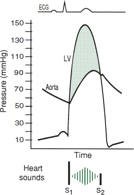
Pathophys Heart Dis., 7th ed., 2021, for this et al.
Diagnostic studies
• ECG: may see LVH, LAE, LBBB, AF (in late disease)
• CXR: cardiomegaly, AoV calcification, poststenotic dilation of ascending Ao, pulmonary congestion
• Echo: valve morph., jet velocity → estimate pressure gradient (∇) & calculate AVA, dimensionless index (DI); LVEF
• Cardiac cath: usually to r/o CAD (in ~½ of calcific AS); for hemodyn. if disparity between exam & echo: ✓ pressure gradient (∇) across AoV, calc AVA (underestim. if mod/sev AR)
• Dobutamine challenge (echo or cath): if low EF and mean ∇ <40, use to differentiate:
Afterload mismatch: 20% ↑ SV & ∇, no ∆ AVA (implies contractile reserve, ↑ EF post-AVR)
Pseudostenosis: 20% ↑ SV, no ∆ in ∇, ↑ AVA (implies low AVA artifact of LV dysfxn)
Limited contractile reserve: no ∆ SV, ∇ or AVA (implies EF prob. will not improve w/ AVR)
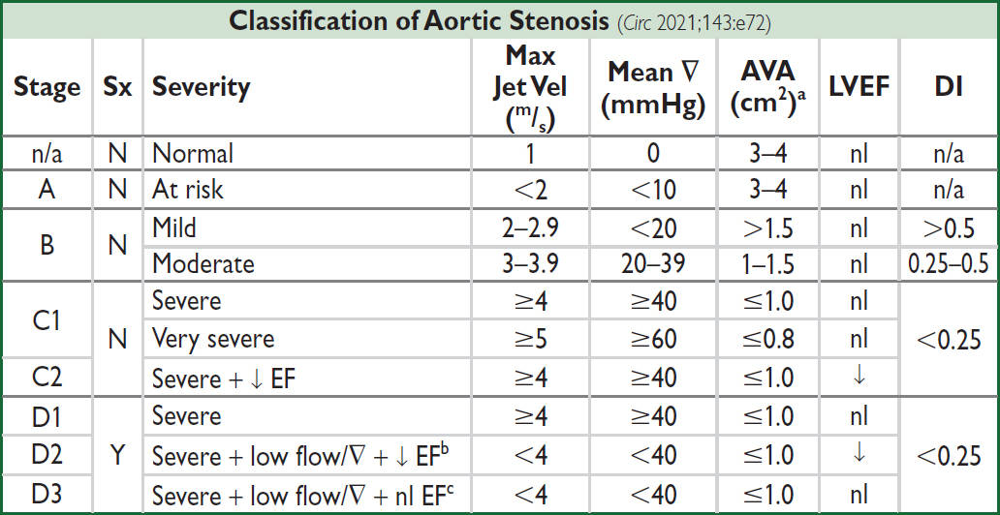
aAVA indexed to BSA <0.6 cm2/m2 also severe (use for smaller Pts); bDSE → max jet vel ≥4 & AVA ≤1.0; cSmall LV w/ ↓ stroke vol (LVSVi <35 mL/m2), severe LVH with marked diastolic dysfunction, consider cardiac amyloid
Valve replacement (Circ 2021;143:e72)
• Based on symptoms: once they develop → AVR needed
• Indicated in: sx severe (stage D1; D2; D3 if AS felt to be cause of sx); asx severe + EF <50% (stage C2); or severe (stage C1) and undergoing other cardiac surgery
• Reasonable if: asx severe (C1) but either sx or ↓ BP w/ exercise (can carefully exercise asx AS to uncover sx; do not exercise sx AS), very severe, ↑ BNP, rapid progression
• Growing data to support AVR in asx severe AS (NEJM 2020;382:111; Circ 2021;143:e72)
• Type of valve: mechanical reasonable if Pt <50 yrs, bioprosthetic if >65 yrs or cannot tolerate long-term anticoagulation; individualize if 50–65 yrs
• Transcatheter AoV implantation (TAVI, see below) attractive alternative to surgery
• Medical (if not AVR candidate or to temporize): careful diuresis prn, control HTN, maintain
SR; digoxin if ↓ EF & HF or if AF; avoid venodilators (nitrates) & ⊖ inotropes (βB/CCB) if
severe AS; avoid vigorous physical exertion once AS mod–severe
? nitroprusside (w/ PAC) in HF w/ sev. AS, ↓ EF/CO, & HTN (Circ 2013;128:1349)
• IABP: stabilization, bridge to surgery
• Balloon valvotomy (now rare): ↑ AVA, but risk CVA/AR & restenosis; ∴ bridge or palliation
TAVI (transcatheter AoV implantation) (JAMA 2021;325:2480; Circ 2021;143:e72)
• Valves: balloon-expandable or self-expanding.
• Most commonly deployed retrograde via perc. transfemoral access (best outcomes)
• Peri- & postprocedural complic.: CHB ~15% at 30d, more common if preexisting RBBB (JACC 2020;76:2391); annular rupture or coronary occlusion (both rare); stroke; local vascular; paravalvular leaks
• Postprocedural antithrombotic Rx: ASA 75–100 mg/d superior to DAPT (NEJM 2020;383:1447). In Pts with indication for OAC: OAC alone superior to OAC + P2Y12 (NEJM 2020;382:1696; Circ 2021;143:e72); apixaban & edoxaban appear comparable to warfarin (ATLANTIS, ACC 2021; NEJM 2021;385:2150)
• Outcomes w/ TAVI: In nonoperative Pts (ie, vs. med Rx): ↓ mortality but still ~72% 5 y mortality in TAVI reflective of comorbidities (NEJM 2012;366:1696; Lancet 2015;385:2485).
TAVI noninferior to SAVR in terms of risk of death or disabling stroke for high,
intermediate, and low surgical risk Pts (NEJM 2014;370:1790; 2020;382:799; 2019;380:1695 &
2019;380:1706; JACC 2021;77:1149).
AORTIC REGURGITATION (AR)
Etiology (Circ 2006;114:422)
• Valve disease (43%): rheumatic (usually mixed AS/AR + MV disease); bicuspid AoV (natural hx: ⅓→ normal, ⅓→ AS, ⅙→ AR, ⅙→ endocarditis → AR); infective endocarditis; valvulitis (RA, SLE, certain anorectics & serotonergics, XRT)
• Root disease (57%): HTN, aortic aneurysm/dissection, annuloaortic ectasia (ie, Marfan), aortic inflammation (GCA, Takayasu’s, ankylosing spond., reactive arthritis, syphilis)
Clinical manifestations
• Acute: sudden ↓ forward SV and ↑ LVEDP (noncompliant ventricle) → pulmonary edema ± hypotension and cardiogenic shock
• Chronic: clinically silent while LV dilates (to ↑ compliance to keep LVEDP low) more than it hypertrophies → chronic volume overload → LV decompensation → CHF
• Natural hx: variable progression (unlike AS, can be fast or slow); once decompensation begins, prognosis poor w/o AVR (mortality ~10%/y)
Physical exam
• Early diastolic decrescendo murmur at LSB (RSB if dilated Ao root); ↑ w/ sitting forward, expir, handgrip; severity of AR ∝ duration of murmur (except in acute and severe late); Austin Flint murmur: mid-to-late diastolic rumble at apex (AR jet interfering w/ mitral inflow)
• Wide pulse pressure due to ↑ stroke volume, hyper-dynamic pulse; pulse pressure narrows in late AR with ↓ LV fxn; bisferiens (twice-beating) arterial pulse
• PMI diffuse and laterally displaced; soft S1 (early closure of MV); ± S3 (≠ ↓ EF but rather just volume overload in AR)
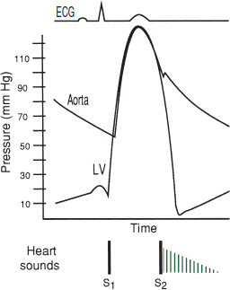
Classic Eponymous Signs in Chronic AR (South Med J 1981;74:459) |
|
Sign |
Description |
Corrigan’s pulse |
“water hammer” pulse (ie, rapid rise/fall or distention/collapse) |
Hill’s sign |
(popliteal SBP – brachial SBP) >60 mmHg |
Duroziez’s sign |
to-and-fro murmur heard over femoral artery w/ light compression |
Pistol shot sounds |
pistol shot sound heard over femoral artery |
Traube’s sound |
double sound heard over femoral artery when compressed distally |
de Musset’s sign |
head-bobbing with each heartbeat (low Se) |
Müller’s sign |
systolic pulsations of the uvula |
Quincke’s pulses |
subungual capillary pulsations (low Sp) |
Diagnostic studies
• ECG: can see LVH, LAD, abnl repol; CXR: cardiomegaly ± ascending Ao dilatation
• Echo: severity of AR (severe = regurg jet width ≥65% LVOT, regurg fraction ≥50%, effective regurg orifice ≥0.3 cm2, holodiastolic flow reversal in descend. Ao; moderate = jet width 25–64%, regurg fraction 30–49%, regurg orifice 0.1–0.29 cm2); LV size & fxn
Treatment (Lancet 2016;387:1312; Circ 2021;143:e72)
• Acute decompensation (consider endocarditis as possible acute precipitant): surgery usually urgently needed for acute severe AR, which is poorly tolerated by LV IV afterload reduction (nitroprusside) and inotropic support (dobutamine) ± chronotropic support (↑ HR → ↓ diastole → ↓ time for regurgitation) pure vasoconstrictors and IABP contraindicated
• In chronic AR, management decisions based on LV size and fxn (and before sx occur); low diastolic BP and high resting HR associated with mortality (JACC 2020;75:29)
• Surgery (AVR, replacement or repair if possible):
Severe and sx (if equivocal, consider stress test)
Asx and either EF ≤55%, LV dilation [LVESD >50 mm or LVESDi (indexed to BSA) ≥ 25 mm/m2 (JACC 2019;73:1741)], or undergoing cardiac surg
• Transcatheter AoV implantation (TAVI) being explored (JACC 2013;61:1577 & 2017;70:2752)
• Medical therapy: vasodilators (nifedipine, ACEI/ARB, hydralazine) if severe AR w/ sx or LV dysfxn & not operative candidate or to improve hemodynamics before AVR.
MITRAL REGURGITATION (MR)
Etiology (NEJM 2010;363:156 & 2020;383:1458)
• Primary (degeneration of valve apparatus)
Leaflet abnl: myxomatous (MVP), endocarditis, calcific, RHD, valvulitis (collagen-vascular disease), congenital, anorectic drugs (phen-fen), XRT
Chordae tendineae rupture: myxomatous, endocarditis, spontaneous, trauma
Papillary muscle dysfxn b/c of ischemia or rupture during MI [usu. posteromedial papillary m. (supplied predominantly by PDA) vs. anterolateral (suppl. by diags & OMs)]
• Secondary (functional): inferoapical papillary muscle displacement due to ischemic LV remodeling or DCM; HCM (JACC 2015;65:1231)
Clinical manifestations
• Acute: pulmonary edema, hypotension, cardiogenic shock (NEJM 2004;351:1627)
• Chronic: typically asx for yrs, then as LV fails → progressive DOE, fatigue, AF, PHT
• Prognosis: 5-y survival w/ medical therapy is 80% if asx, but only 45% if sx
Physical exam
• High-pitched, blowing, holosystolic murmur at apex; radiates to axilla; ± thrill; ↑ w/ handgrip (Se 68%, Sp 92%),
↓ w/ Valsalva (Se 93%)
ant. leaflet abnl → post. jet heard at spine
post. leaflet abnl → ant. jet heard at sternum
• ± diastolic rumble b/c ↑ flow across valve
• Lat. displ. hyperdynamic PMI, obscured S1, widely split S2 (A2 early b/c ↓ LV afterload, P2 late if PHT); ± S3
• Carotid upstroke brisk (vs. diminished and delayed in AS)
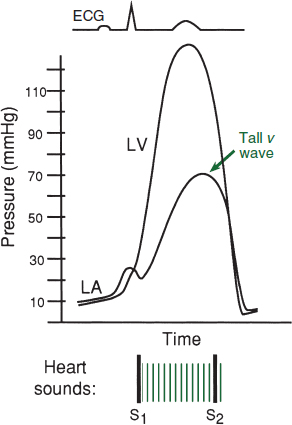
Diagnostic studies (Circ 2021;143:e72)
• ECG: may see LAE, LVH, ± atrial fibrillation
• CXR: dilated LA, dilated LV, ± pulmonary congestion
• Echo: MV anatomy (ie, etiol); MR severity: jet area, jet width at origin (vena contracta) or effective regurgitant orifice (ERO; predicts survival); LV fxn (EF should be supranormal if compensated, ∴ EF <60% w/ sev. MR = LV dysfxn)
• TEE or cardiac MR if TTE not sufficiently informative
• Cardiac cath: prominent PCWP c-v waves (not spec. for MR), LVgram for MR severity & EF
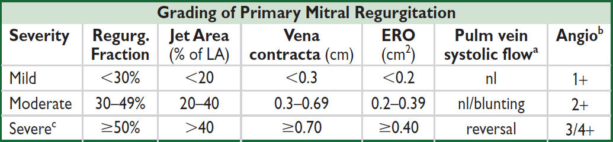
aInfluenced by LV function, etc. b1+ = LA clears w/ each beat; 2+ = LA does not clear, faintly opac. after several beats; 3+ = LA & LV opac. equal. cFor 2° MR, ERO ≥0.20 severe as underestimated & likely LV dysfxn.
Treatment (Circ 2021;143:e72)
• Acute severe MR: consider ischemia & endocarditis as precipitants; IV afterload reduction (nitroprusside), relieve congestion (diuresis & NTG), ± inotropes (dobuta), IABP, avoid vasoconstrictors; surgery usually needed b/c prognosis poor w/o (JAMA 2013;310:609)
• Chronic severe primary MR: surgery (repair [preferred if feasible] vs. replacement) if sx; asx & either EF 60% or LVESD 40 mm; reasonable if low surgical risk + high prob successful repair; consider transcatheter repair if not surg candidate
• For primary MR, surgery superior to percutaneous repair (NEJM 2011;364:1395)
• If undergoing surgery & AF, MAZE ↓ AF recurrence, Ø ∆ stroke (NEJM 2015;372:1399); surgical LAA occlusion ↓ risk of stroke; nb, Pts remained on anticoag (NEJM 2021;384:2081)
• Chronic sx severe secondary MR: if on optimal GDMT, EF 20–50%, LVESD ≤70 mm, & PASP ≤70 mmHg, transcatheter edge-to-edge repair (TEER) may ↑ survival & ↓ HF hosp., but conflicting trial data (NEJM 2018:379;2297 & 2307; JACC 2021;77:1029 & 78:2326); consider MV surgery if EF≥50% or EF≤50% but not meeting criteria for repair
• Transcathether replacement (TMVR) remains under study (JACC Intv 2021;14:489)
• If sx & EF<60% but not operative candidate: Rx (βB, ACE/ARB ± MRA); ↓ preload w/ diuretics, NTG (espec. if ischemic MR) for sx relief ± ↓ ERO; maintain SR
• Asymptomatic: Ø proven benefit of medical therapy; βB ↑ LV fxn (JACC 2012;60:833)
MITRAL VALVE PROLAPSE (MVP)
Definition and Etiology
• Billowing of MV leaflet ≥2 mm above mitral annulus in parasternal long axis echo view
• Primary: sporadic or familial myxomatous proliferation of spongiosa of MV apparatus
• Secondary: trauma, endocarditis, congenital, CTD (eg, Marfan’s, OI, Ehlers-Danlos)
Clinical manifestations (usually asymptomatic)
• MR, endocarditis, emboli, arrhythmias (rarely SCD from VT from papillary muscle)
• High-pitched, midsystolic click (earlier w/ ↓ preload) ± mid-to-late systolic murmur
• No Rx per se [endocarditis Ppx not rec. (Circ 2007;116:1736)]; Rx MR as above
MITRAL STENOSIS (MS)
Etiology (Lancet 2012;379:953)
• Rheumatic heart disease (RHD): fusion of commissures → “fish-mouth” valve from autoimmune rxn to β strep infxn; seen largely in developing world (Circ 2020;142:e337)
• Mitral annular calcification: encroachment upon leaflets → fxnal MS; espec in ESRD
• Postsurgical repair or post-TEER w/ reduced mitral valve area (MVA)
• Congenital, infectious endocarditis w/ large lesion, myxoma near MV, thrombus
• Valvulitis (eg, SLE, amyloid, carcinoid) or infiltration (eg, mucopolysaccharidoses)
Clinical manifestations (Lancet 2009;374:1271)
• Dyspnea and pulmonary edema (if due to RHD, sx usually begin in 30s) precipitants: exercise, fever, anemia, volume overload (incl. pregnancy), tachycardia, AF
• Atrial fibrillation: onset often precipitates heart failure in Pts w/ MS
• Embolic events: commonly cerebral, espec in AF or endocarditis
• Pulmonary: hemoptysis, frequent bronchitis (due to congestion), PHT, RV failure
• Ortner’s syndrome: hoarseness from LA compression of recurrent laryngeal nerve
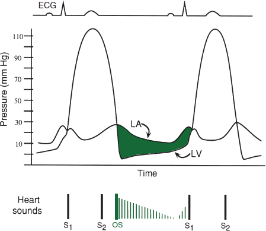
Physical exam
• Low-pitched mid-diastolic rumble at apex w/ presystolic accentuation (if not in AF); best heard in L lat decubitus position during expiration, ↑ w/ exercise; severity proportional to duration (not intensity) of murmur; loud S1
• Opening snap (high-pitched early diastolic sound at apex) from fused leaflet tips; MVA proportional to S2–OS interval (tighter valve → ↑ LA pressure → shorter interval)
• Loud S1 (unless MV calcified and immobile)
Diagnostic studies
• ECG: LAE (“P mitrale”), ± AF, ± RVH
• CXR: dilated LA (flat L heart border, R double density, displaced L mainstem bronchus)
• Echo: estimate pressure gradient (∇), RVSP, valve area, valve echo score (0–16, based on leaflet mobility & thick, subvalvular thick., Ca++); exer. TTE (to assess ∆ RVSP and ∇) if sx & severity of MS at rest discrepant; TEE to assess for LA thrombus before PMBC
• Cardiac cath: ∇, calculated MVA; LA tall a wave & blunted y descent; ↑ PA pressures
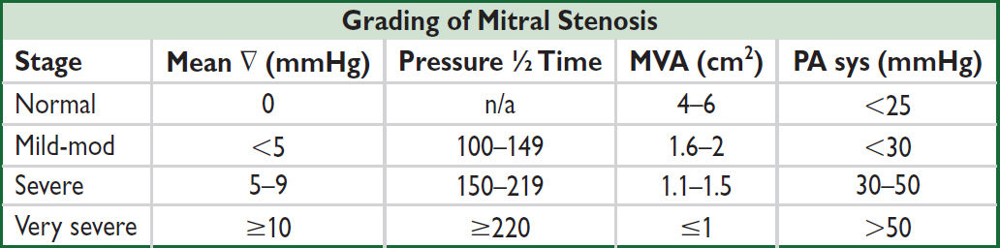
Treatment (Lancet 2016;387:1324; Circ 2021;143:e72)
• Medical: Na restriction, cautious diuresis, βB, AF control, sx-limited physical stress
• Antibiotic Ppx recommended if h/o RHD w/ valvular disease for 10 y or until age 40
• Anticoag w/ warfarin (not DOAC) if: AF; prior embolism; LA clot
• Mechanical intervention indicated if sx severe MS; reasonable if asx severe MS but PASP >50 mmHg and morphology favorable for PMBC; consider PMBC if non-severe MS but exertional sx and hemodyn signif w/ exercise, or if asx severe MS and new-onset AF
• Percutaneous mitral balloon commissurotomy (PMBC): preferred Rx if RHD; ≈ MVR if valvuloplasty score <8, Ø if mod-severe MR or LA clot
• Surgical (MV repair if possible, o/w replacement) if PMBC contraindicated
• Calcific MS: surgical MVR if severe & highly sx; use of transcatheter aortic prosthesis experimental and w/ high rate of complications (Circ CVI 2020;13:e008425)
• Pregnancy: if NYHA class III/IV → PMBC, o/w medical Rx w/ low-dose diuretic & βB
TRICUSPID REGURGITATION (Circ 2014;129:2440; Lancet 2016;388:2431)
• Fxnl etiol (90%): RV dilation, PHT (may be 2° to L-sided dis.), large L → R shunts
• 1° etiol: myxomatous, IE, pacemaker leads, RHD, CTD, XRT, Ebstein’s, carcinoid, tumors
• Holosystolic murmur, 3rd/4th ICS, ↑ w/ insp (Carvallo’s sign); S3; prominent cv wave in JVP
• Consider repair/replacement in severe TR (eg, ERO ≥0.40 cm2) undergoing L-sided surgery, R heart failure or ? progressive RV dysfxn; emerging transcatheter Rx (JACC 2018;71:2935)
PROSTHETIC HEART VALVES
Mechanical
• Bileaflet (eg, St. Jude Medical); tilting disk; caged-ball
• Very durable (20–30 y), but thrombogenic and ∴ require anticoagulation consider if age <50 y or if anticoagulation already indicated (JACC 2010;55:2413)
Bioprosthetic
• Bovine pericardial or porcine heterograft (eg, Carpentier-Edwards), homograft
• Less durable, but min. thrombogenic; consider if >~65 y, lifespan <20 y, or Ø anticoag
• If 50–69 y, 2× reop but ½ bleeding or stroke vs. mech (JAMA 2014;312:1323 & 2015;313:1435)
Physical exam
• Crisp sounds ± soft murmur during forward flow (normal to have small ∇)
Anticoagulation & antiplatelet therapy (Circ 2021;143:e72)
• Mechanical: warfarin (not DOAC), INR 3 or 2.5 if low-risk mech AVR (none of following: prior thromboembolism, AF, EF <30–35%, hypercoagulable).
If thrombosis, ↑ intensity (eg, INR 2–3 → 2.5–3.5; 2.5–3.5 → 3.5–4.5; or + ASA if not on)
• Bioprosthetic:
Surgical: ASA (75–100 mg/d) or warfarin INR 2.5 ×3–6 mo, then ASA (75–100 mg/d). DOAC reasonable alternative to warfarin if indication for anticoag (NEJM 2020;383:2117).
TAVI: ASA 75–100 mg/d. If need OAC, then no antiplt (vide supra).
Periprocedural “Bridging” of Anticoagulation in Pts with Mechanical Valve(s) |
|
AVR w/o risk factors |
d/c warfarin 2–4 d before surg; restart 12–24 h after surg |
MVR or AVR w/ risk factors |
Preop: d/c warfarin, start UFH (preferred to LMWH) when INR <2 4–6 h preop: d/c UFH; postop: restart UFH & warfarin ASAP |
JACC 2017;70:253. Procedures include noncardiac surgery, invasive procedures, and major dental work.
Correction of overanticoagulation (Circ 2021;143:e72)
• Risk from major bleeding must be weighed against risk of valve thrombosis
• Not bleeding: if INR 5–10, withhold warfarin
• Bleeding: PCC (or FFP); reversal agent for DOACs; ± low-dose (1 mg) vit K IV if on VKA
Endocarditis prophylaxis: for all prosthetic valves (see “Endocarditis”)
Complications
• Structural failure (r/o endocarditis); mechanical valves: rare except for Bjork-Shiley; bioprosth: up to 30% rate w/in 10–15 y, mitral >aortic; consider TAVR (JACC 2017; 69:2253)
• Paravalvular leak (r/o endocarditis); small central jet of regurg is normal in mech. valves
• Obstruction from thrombosis (JACC 2013;62:1731) or pannus: ✓ TTE, TEE, CTA, or fluoro significantly symptomatic pannus ingrowth: remove w/ surgery
thrombosis: surgery if sx or large L-sided mech valve obstruction; UFH ± low-dose lytic if small, not surgical candidate, or R-sided; OAC for sx bioprosthetic thrombosis
• Infective endocarditis ± valvular abscess and conduction system dis. (see “Endocarditis”)
• Embolization (r/o endocarditis); risk highest 1st 90 d, ~1%/y w/ warfarin (vs. 2% w/ ASA, or 4% w/o meds); mech MVR 2× risk of embolic events vs. mech AVR (Circ 1994;89:635)
• Bleeding (from anticoag), hemolysis (espec w/ caged-ball valves or paravalvular leak)
Anatomy
• 2-layered (parietal & visceral) tissue sac surrounding heart & proximal great vessels
Disease states
• Inflammation (w/ or w/o fluid accumulation) → pericarditis
• Fluid accumulation → effusion ± tamponade
• Decrease in compliance (sequela of inflammation) → constrictive pericarditis
• Tamponade and constriction characterized by increased ventricular interdependence
PERICARDITIS AND PERICARDIAL EFFUSION
Etiologies of Acute Pericarditis (JACC 2020;75:76) |
|
Idiopathic (~90%) |
Most presumed to be undiagnosed viral etiologies |
Infectious (<5% can be confirmed infectious) |
Viral: Coxsackie, Parvovirus B19, echo, adeno, EBV, VZV, HIV, influenza, SARS CoV-2 Bacterial (from endocarditis, pneumonia, or s/p cardiac surgery): S. pneumo, N. meningitidis, S. aureus, Borrelia (Lyme); TB Fungi: Histo, Coccidio, Candida; Parasite: Entamoeba, Echino |
Neoplastic (<10%) |
Common: metastatic (lung, breast, lymphoma, leukemia, RCC) Rare: primary cardiac & serosal tumors (mesothelioma) |
Autoimmune |
Connective tissue diseases: SLE, RA, scleroderma, Sjögren’s Vasculitides: PAN, ANCA ⊕ (EGPA, GPA) Drug-induced: procainamide, hydralazine, inh, CsA |
Uremia |
~5–13% of Pts prior to HD; ~20% occurrence in chronic HD Pts |
Cardiovascular |
STEMI, late post-MI (Dressler’s syndrome), but rare in modern era; prox AoD; chest trauma/postpericardiotomy; PCI or EP complication |
Radiation |
>40 Gy to mediastinum; acute or delayed; may be transudative |
Effusion w/o pericarditis |
HF (particularly R-sided as pericardial fluid drains into RA), cirrhosis, nephrotic syndrome, hypothyroidism, amyloidosis. Transudative. |
Clinical manifestations (NEJM 2014;371:2410; JACC 2020;75:76)
• Pericarditis: retrosternal CP, pleuritic, positional (often ↓ by sitting forward), → trapezius; may be absent in TB, neoplastic, XRT, or uremic; ± fever; ± s/s of systemic etiologies
• Effusion: present in 50–65% of Pts w/ pericarditis; ranges from asx to tamponade
• Definitions: acute (<4–6 wks), incessant (persistent sx >4–6 wks), recurrent (after a symptom-free interval of 4–6 wks), chronic (lasting >3 mos)
Physical exam
• Pericarditis: multiphasic friction rub best heard at LLSB w/ diaphragm of stethoscope. Notoriously variable and evanescent leathery sound w/ up to 3 components: atrial contraction, ventricular contraction, ventricular relaxation (NEJM 2012;367:e20).
• Effusion: distant heart sounds, dullness over left posterior lung field due to compressive atelectasis from pericardial effusion (Ewart’s sign)
Diagnostic studies (JAMA 2015;314:1498; EHJ 2015;36:2921; JACC 2020;75:76)
• Need ≥2 of the following: chest pain (as noted above), friction rub, ECG findings, effusion
• ECG: may show diffuse STE (concave up) & PR depression (except in aVR: ST ↓ & PR ↑), TWI; classically and in contrast to STEMI, TWI do not occur until STs normalize
Stages: (I) STE & PR ↓; (II) ST & PR normalize; (III) diffuse TWI; (IV) Tw normalize
ECG may show evidence of large effusion w/ low-voltage & electrical alternans (beat-to-beat ∆ in QRS amplitude and/or axis due to swinging heart)
• CXR: if lg effusion (>250 mL) → ↑ cardiac silhouette w/ “water-bottle” heart & epicardial halo
• Echocardiogram: presence, size, & location of effusion; presence of tamponade physiology; pericarditis itself w/o spec. abnl (∴ echo can be nl), although can see pericardial stranding (fibrin or tumor); can also detect LV/RV dysfxn (myocarditis?)
• CT: effusion (often larger by CT than by echo) ± calcif.; pericard. enhancement w/ contrast
• MRI: may reveal pericardial thickening/inflammation, as well as myocardial involvement
• ⊕ cTn in ~30%, indicative of concomitant myocarditis (JACC 2003;42:2144). Inflammatory biomarkers (ESR, CRP) elevated in 80% of presentations; CRP predicts recurrence.
Workup for effusion
• r/o infxn: usually apparent from Hx & CXR; ? value of ✓ acute and convalescent serologies
• r/o noninfectious etiologies: BUN, Cr, ANA, RF, HIV, screen for common malignancies
• Pericardiocentesis if suspect infxn or malignancy or large effusion (>2 cm) or recurrent
✓ cell counts, TP, LDH, glc, Gram stain & Cx, AFB, cytology
ADA, PCR for MTb, and specific tumor markers as indicated by clinical suspicion
“exudate”: TP >3 g/dL, TPeff/TPserum >0.5, LDHeff/LDHserum >0.6 or glc <60 mg/dL; high Se (~90%) but very low Sp (~20%); overall low utility (Chest 1997;111:1213)
• Pericardial bx if suspicion for malignancy or TB; perform during every surgical drainage
Treatment of pericarditis (JACC 2020;75:76)
• High-dose NSAID (eg, ibuprofen 600–800 mg tid) or ASA (eg, 650–1000 mg tid) × 7–14 d then taper over wks; ASA preferred over NSAID in acute MI; consider PPI to ↓ risk of GIB
• Add colchicine 0.6 mg bid (qd if ≤70 kg) × 3 mo; 50% ↓ risk of refractory or recurrent pericarditis (NEJM 2013;369:1522). Amio, dilt, verap & atorva ↓ P-gp & ↑ risk of colchicine tox.
• Avoid steroids except for systemic autoimmune disorder, uremia, preg., NSAIDs contra- indicated. Appear to ↑ rate of pericarditis recurrence; risk lower w/ low-dose wt-based (ie, prednisone 0.2–0.5 mg/kg) with slow taper (Circ 2008;118:667 & 2011;123:1092).
• Avoid anticoagulants (although no convincing data that ↑ risk of hemorrhage/tamponade)
• Infectious effusion → pericardial drainage (preferably surgically) + systemic antibiotics
• Restrict activity until sx resolve/hsCRP ↓; athletes must also wait ~1–3 mos w/ nl TTE/ECG
• Acute idiopathic pericarditis self-limited in 70–90% of cases
• Recurrent pericarditis (Circ 2007;115:2739) risk factors: subacute, lg effusion/tamponade, T >38°C, no NSAID response after 7 d. Rx: colchicine 0.6 mg bid × 6 mo (Lancet 2014;383: 2232). IL-1 antagonists: anakinra (JAMA 2016;316:1906) or rilonacept (NEJM 2021;384:31).
• Recurrent effusions: consider pericardial window (percutaneous vs. surgical)
PERICARDIAL TAMPONADE
Etiology
• Any cause of pericarditis but espec malignancy, infectious, uremia, ascending AoD, myocardial rupture, periprocedural complication, trauma, post-cardiotomy
• Rapidly accumulating effusions most likely to cause tamponade b/c no time for pericardium to stretch (eg, to ↑ compliance) and accommodate ↑ intrapericardial fluid volume
Pathophysiology (NEJM 2003;349:684)
• ↑ intrapericardial pressure, compression of heart chambers, ↓ venous return → ↓ CO
• Diastolic pressures ↑ & equalize in all cardiac chambers → minimal flow of blood from RA to RV when TV opens → blunted y descent
• ↑ ventricular interdependence → pulsus paradoxus (pathologic exaggeration of nl physio) Inspiration → ↓ intrapericardial & RA pressures → ↑ venous return → ↑ RV size → septal shift to left. Also, ↑ pulmonary vascular compliance → ↓ pulm venous return. Result is ↓ LV filling → ↓ LV stroke volume & blood pressure & pulse pressure.
Clinical manifestations
• Cardiogenic shock (hypotension, fatigue) without pulmonary edema
• Dyspnea (seen in ~85%) may be due to ↑ respiratory drive to augment venous return
Physical exam (EHJ 2014;35:2279)
• Beck’s triad (present in minority of cases): distant heart sounds (28%), ↑ JVP (76%) w/ blunted y descent, hypotension (26%); ± pericardial friction rub (30%)
• Reflex tachycardia (77%), cool extremities
• Pulsus paradoxus (Se 82%, Sp 70%) = ↓ SBP ≥10 mmHg during inspiration
⊕ LR 3.3 (5.9 if pulsus >12), ⊖ LR 0.03
Ddx = PE, hypovolemia, severe COPD, auto-PEEP, periconstriction (~⅓), RV infarct
Can be absent if preexisting ↑ LVEDP, arrhythmia, severe AR, ASD, regional tamponade
• Tachypnea and orthopnea but clear lungs
Diagnostic studies
• ECG: ↑ HR, ↓ voltage (seen in 42%), electrical alternans (20%), ± signs of pericarditis
• CXR: ↑ cardiac silhouette (89%)
• Echocardiogram: ⊕ effusion, IVC plethora, septal shift with inspiration
diastolic collapse of RA (Se 85%, Sp 80%) and/or RV (Se <80%, Sp 90%)
respirophasic ∆’s in transvalvular velocities (↑ across TV & ↓ across MV w/ inspir.)
postsurgical tamponade may be localized and not easily visible
• Cardiac cath (right heart and pericardial): elevation (15–30 mmHg) and equalization of
intrapericardial and diastolic pressures (RA, RV, PCWP), blunted y descent in RA
↑ in stroke volume postpericardiocentesis = ultimate proof of tamponade
if RA pressure remains high after drainage, Ddx: effusive-constrictive dis. (visceral pericardium constriction), myocardial. dysfxn (eg, concomitant myocarditis)
Treatment (EHJ 2014;35:2279)
• Volume (but be careful b/c overfilling can worsen tamponade) and ⊕ inotropes (avoid βB)
• Avoid vasoconstrictors b/c will ↓ stroke volume & potentially ↓ HR
• Avoid positive pressure ventilation b/c it can further impair cardiac filling (Circ 2006;113:1622)
• Pericardiocentesis (except if due to aortic/myocardial rupture, for which emergent surgery is treatment of choice; if too unstable, consider small pericardiocentesis to prevent PEA)
• Surgical drainage considered if fluid rapidly reaccumulates, loculated, or hemorrhagic
Etiology (Circ 2011;124:1270)
• Any cause of pericarditis (~1–2% incidence overall after acute pericarditis)
• Highest risk w/ TB, bacterial, neoplastic, XRT, connective tissue, postcardiac surgery
• Viral/idiopathic, b/c most common cause of pericarditis, also account for signif proportion
Pathophysiology
• Adhesion of visceral and parietal pericardial layers → rigid pericardium that limits diastolic filling of ventricles → ↑ systemic venous pressures
• Venous return is limited only after early rapid filling phase; ∴ rapid ↓ in RA pressure with atrial relaxation and opening of tricuspid valve and prominent x and y descents
• Kussmaul sign: JVP does not decrease with inspiration (↑ venous return with inspiration, but negative intrathoracic pressure not transmitted to heart because of rigid pericardium)
Clinical manifestations (NEJM 2011;364:1350)
• Right-sided >left-sided heart failure (systemic congestion >pulmonary congestion)
Physical exam
• ↑ JVP with prominent y descent, ⊕ Kussmaul sign [Ddx: tricuspid stenosis, acute cor pulmonale, RV dysfxn (CMP, RV MI), SVC syndrome]
• Hepatosplenomegaly, ascites, peripheral edema. Consider in Ddx of idiopathic cirrhosis.
• PMI usually not palpable, pericardial knock, usually no pulsus paradoxus
Diagnostic studies
• ECG: nonspecific, AF common (up to 33%) in advanced cases
• CXR: calcification (MTb most common), espec in lateral view (although not specific)
• Echocardiogram: ± thickened pericardium, “septal bounce” = abrupt displacement of septum during rapid filling in early diastole
• Cardiac catheterization: atria w/ Ms or Ws (prominent x and y descents)
ventricles: dip-and-plateau or square-root sign (rapid ↓ pressure at onset of diastole, rapid ↑ to early plateau)
discordance between LV & RV pressure peaks during respiratory cycle (Circ 1996;93:2007)
• CT or MRI: thickened pericardium (>4 mm; Se ~80%) w/ tethering (Circ 2011;123:e418)
Constrictive Pericarditis vs. Restrictive Cardiomyopathy (JACC 2016;68;2329) |
||
Evaluation |
Constrictive Pericarditis |
Restrictive Cardiomyopathy |
Physical exam |
⊕ Kussmaul sign Absent PMI ⊕ Pericardial knock |
± Kussmaul sign Powerful PMI, ± S3 and S4 ± Murmurs of MR, TR |
ECG |
± Low voltage |
Low voltage if infiltrative myopathy ± Conduction abnormalities |
Echocardiogram |
Respirophasic variation (25–40%): inspir. → ↑ flow across TV and ↓ flow across MV e′ (tissue velocity) nl/↑ (>12 cm/sec) Expir. hepatic vein flow reversal Septal bounce in early diastole Normal wall thickness |
<10% respirophasic variation Slower peak filling rate Longer time to peak filling rate e′ ↓ (<8 cm/sec; Se & Sp ~95%) Inspir. hepatic vein flow reversal Biatrial enlargement ± ↑ wall thickness |
CT/MRI |
Usually w/ thickened pericardium |
Normal pericardium |
NT-proBNP |
Variable |
Typically ↑/↑↑ (JACC 2005;45:1900) |
Cardiac catheterization |
Prominent x and y descents (more so in constriction) Dip-and-plateau sign (more so in constriction) |
|
LVEDP = RVEDP RVSP <55 mmHg (Se 90%, Sp 29%) RVEDP >⅓ RVSP (Se 93%, Sp 46%) Discordance of LV & RV pressure peaks during respiratory cycle Systolic area index (ratio of RV to LV pressure–time area in inspir vs. expir) >1.1 (Se 97%, Sp 100%) |
LVEDP > RVEDP (esp. w/ vol.) RVSP >55 mmHg RVEDP <⅓ RVSP Concordance of LV & RV pressure peaks during respiratory cycle Systolic area index ≤1.1 (JACC 2008;51:315) |
|
Endomyocardial biopsy |
Usually normal |
± Specific etiology of RCMP (fibrosis, infiltration, hypertrophy) |
Treatment
• Diuresis if intravascular volume overload; surgical pericardiectomy if infectious or advanced
ACC/AHA Classification for Office-Based BP (HTN 2018;71:e13) |
||
Category |
Systolic (mmHg) |
Diastolic (mmHg) |
Normal |
<120 |
<80 |
Elevated |
120–129 |
<80 |
Stage 1 hypertension |
130–139 |
80–89 |
Stage 2 hypertension |
≥140 |
≥90 |
Average ≥2 measurements >1–2 minutes apart. If disparity in a category between systolic and diastolic, higher value determines stage. Elevated office BP should be confirmed with out-of-office (ABPM or home cuff) to confirm; can treat stage 2 immediately. White coat (≥Stage 1 in office but <at home) at heightened risk of developing HTN. Masked (<Stage 1 in office but ≥at home), if persistent, treat as HTN.
Epidemiology (Circ 2021;143:e254; Lancet 2021;398:957)
• Prevalence 47% in U.S. adults, higher in African-Americans; M = F
• Of those with HTN, ~40% unaware of dx; of those dx w/ HTN, only ½ achieve target BP
Etiologies (JACC 2017;71:127)
• Essential (95%): onset 25–55 y; ⊕ FHx. Unclear mechanism but ? additive microvasc renal injury over time w/ contribution of hyperactive sympathetics (NEJM 2002;346:913).
↑ Age → ↓ art compliance → HTN. Genetics + environment involved (Nature 2011;478:103).
• Secondary: Consider if Pt <20 or >50 y or if sudden onset, severe, refractory HTN
Secondary Causes of Hypertension |
|||
Diseases |
Suggestive Findings |
Initial Workup |
|
RENAL |
Renal parenchymal (2–3%) |
h/o DM, polycystic kidney disease, glomerulonephritis |
CrCl, albuminuria See “Kidney Disease” |
Renovascular (1–2%) Athero (90%) FMD (10%, young women) PAN, scleroderma |
ARF induced by ACEI/ARB Recurrent flash pulm edema Renal bruit; hypokalemia (NEJM 2009;361:1972) |
MRA (>90% Se & Sp, less for FMD), CTA, duplex U/S, angio, plasma renin (low Sp) |
|
ENDO |
Hyperaldo or Cushing’s (1–5%) |
Hypokalemia Metabolic alkalosis |
See “Adrenal Disorders” |
Pheochromocytoma (<1%) |
Paroxysmal HTN, H/A, palp. |
||
Myxedema (<1%) |
See “Thyroid Disorders” |
TFTs |
|
Hypercalcemia (<1%) |
Polyuria, dehydration, ∆ MS |
iCa |
|
OTHER |
Obstructive sleep apnea (qv); alcohol |
||
Medications: OCP, steroids, licorice; NSAIDs (espec COX-2); Epo; CsA; TKI |
|||
Aortic coarctation: ↓ LE pulses, systolic murmur, radial-femoral delay; abnl TTE, CXR |
|||
Polycythemia vera: ↑ Hct |
|||
Standard workup (JAMA 2021;325:1650 & 326:339)
• Goals: (1) identify CV risk factors; (2) consider 2° causes; (3) assess for target-organ damage
• History: CAD, HF, TIA/CVA, PAD, DM, renal insufficiency, sleep apnea, preeclampsia; ⊕ FHx for HTN; diet, Na intake, smoking, alcohol, prescription and OTC meds, OCP
• Physical exam: ✓ BP in both arms; funduscopic exam, BMI, cardiac (LVH, murmurs), vascular (bruits, radial-femoral delay), abdominal (masses or bruits), neuro exam
• Testing: K, BUN, Cr, Ca, glc, Hct, U/A, lipids, TSH, urinary albumin:creatinine (if ↑ Cr, DM, peripheral edema), ? renin, ECG (for LVH), CXR, TTE (eval for valve abnl, LVH)
• Ambulatory BP monitoring (ABPM): consider for episodic, masked, resistant, or white coat HTN; stronger predictor of mortality than clinic BP (NEJM 2018;378:1509); 24 h target <130/80
Complications of HTN
• Neurologic: TIA/CVA, ruptured aneurysms, vascular dementia
• Retinopathy: stage I = arteriolar narrowing; II = copper-wiring, AV nicking; III = hemorrhages and exudates; IV = papilledema
• Cardiac: CAD, LVH, HF, AF
• Vascular: aortic dissection, aortic aneurysm (HTN = key risk factor for aneurysms)
• Renal: proteinuria, renal failure
Treatment (J Clin HTN 2014;16:14; Circ 2018;138:e426; NEJM 2018;378:636)
• Every ↓ 5 mmHg → ~10% ↓ ischemic heart disease, stroke, and HF (Lancet 2021;397:1625)
• Lifestyle modifications (each may ↓ SBP ~5 mmHg)
weight loss: goal BMI 18.5–24.9; aerobic exercise: 90–150 min exercise/wk
diet: rich in fruits & vegetables, low in saturated & total fat (DASH, NEJM 2001;344:3)
limit Na: ideally ≤1.5 g/d or ↓ 1 g/d; ↑ K intake / use salt substitute (NEJM 2021;385:1067)
limit alcohol: ≤2 drinks/d in men; ≤1 drink/d in women & lighter-wt Pts; avoid NSAIDs
• ACC/AHA: initiate BP med if BP ≥130/80 & either clinical ASCVD, HF, CKD, T2DM, ≥65 yrs old or 10-y ASCVD risk ≥10%; otherwise if BP ≥140/90
• In high CV risk w/o DM, SBP target <120 (via unattended automated cuff) ↓ MACE & mortality vs. <140 mmHg, but w/ ↑ HoTN, AKI, syncope, electrolyte abnl (NEJM 2021;384:1921 & 385:1268)
• Pharmacologic options
Pre-HTN: ARB prevents onset of HTN, no ↓ in clinical events (NEJM 2006;354:1685)
HTN: choice of therapy controversial, concomitant disease and stage may help guide Rx; ? improved control with nighttime administration (EHJ 2020;41:4564)
Uncomplicated: CCB, ARB/ACEI, or thiazide (chlorthalidone preferred) are 1st line; βB not.
For black Pts, reasonable to start with CCB or thiazide.
+ CAD (Circ 2015;131:e435): ACEI or ARB; ACEI+CCB superior to ACEI+thiazide (NEJM 2008;359:2417) or βB+diuretic (Lancet 2005;366:895); may require βB and/or nitrates for anginal relief; if h/o MI, βB ± ACEI/ARB ± aldo antag (see “ACS”)
+ HF: ARNI/ACEI/ARB, βB, diuretics, aldosterone antagonist (see “Heart Failure”)
+ prior stroke: ACEI ± thiazide (Lancet 2001;358:1033)
+ diabetes mellitus: ACEI or ARB; can also consider thiazide or CCB
+ chronic kidney disease: ACEI or ARB (NEJM 2001;345:851 & 861)
• Tailoring therapy: if stage 1, start w/ monoRx; if stage 2, consider starting w/ combo (eg, ACEI + CCB; NEJM 2008;359:2417); start at ½ max dose; after ~1 mo, uptitrate or add drug
• Pregnancy: methyldopa, labetalol, & nifed pref. Hydral OK; avoid diuretics; Ø ACEI/ARB. Targeting DBP 85 vs. 105 safe and ↓ severe HTN (NEJM 2015;372:407).
Resistant HTN (BP >goal on ≥3 drugs incl diuretic; HTN 2018;72:e53)
• Exclude: 2° causes (see table) and pseudoresistance: inaccurate measure (cuff size), diet noncomp (↑ Na), poor Rx compliance/dosing, white coat HTN (✓ ABPM)
• Ensure effective diuresis (chlorthalidone or indapamide >HCTZ; loop >thiazide if eGFR <30)
• Can add aldosterone antagonist (Lancet 2015;386:2059), β-blocker (particularly vasodilators such as carvedilol, labetalol, or nebivolol), α-blocker, or direct vasodilator
• Consider renal denervation therapy (Lancet 2018;391:2346; 2021;397:2476)
HYPERTENSIVE CRISES
• Hypertensive emergency: ↑ BP (usually SBP >180 or DBP >120) → target-organ damage
Neurologic damage: encephalopathy, hemorrhagic or ischemic stroke, papilledema
Cardiac damage: ACS, HF/pulmonary edema, aortic dissection
Renal damage: proteinuria, hematuria, acute renal failure; scleroderma renal crisis
Microangiopathic hemolytic anemia; preeclampsia-eclampsia
• Hypertensive urgency: SBP >180 or DBP >120 (? 110) w/o target-organ damage
Precipitants
• Progression of essential HTN ± medical noncompliance (espec clonidine) or ∆ in diet
• Progression of renovascular disease; acute glomerulonephritis; scleroderma; preeclampsia
• Endocrine: pheochromocytoma, Cushing’s
• Sympathomimetics: cocaine, amphetamines, MAO inhibitors + foods rich in tyramine
Treatment – tailor to clinical condition (Circ 2018;138:e426)
• AoD, eclampsia/severe preeclampsia, pheo: target SBP <140 (<120 for AoD) in 1 hour
• Emerg w/o above: ↓ BP by ~25% in 1 h; to 160/100–110 over next 2–6 h, then nl over 1–2 d
• Acute ischemic stroke (w/in 72 hr from sx onset): <185/110 before lysis initiated, o/w target <220/120 (same SBP goal for ICH)
• Watch UOP, Cr, mental status: may indicate a lower BP is not tolerated
IV Drugs for Hypertensive Crises (Circ 2018;138:e426; Stroke 2018;49:46) |
||
Drug |
Dose |
Preferred for |
Labetalol |
20–80 mg IVB q10min or 0.4–2 mg/min |
AoD, ACS, Stroke, Eclampsia |
Esmolol |
0.5–1 mg/kg load → 50–200 µg/kg/min |
AoD, ACS |
Nitroprusside* |
0.25–10 µg/kg/min |
Pulm edema |
Nitroglycerin |
5–500 µg/min |
Pulm edema, ACS |
Nicardipine |
5–15 mg/h (can ↑ 2.5 mg/h q 5 min) |
Stroke, AKI, Eclampsia, Pheo |
Clevidipine |
1–32 mg/h (can titrate q 5–10 min) |
Stroke, Pulm edema, AKI, Pheo |
Fenoldopam |
0.1–1.6 µg/kg/min |
AKI |
Hydralazine |
10–20 mg q20–30min prn |
Eclampsia |
Phentolamine |
5–15 mg bolus q5–15min |
Pheo |
*Metabolized to cyanide → ∆ MS, lactic acidosis, death. Limit use of very high doses (8–10 µg/kg/min) to <10 min.
• HTN urgency: goal to return to normal BP over hrs to days. Reinstitute/intensify anti-HTN Rx. Additional PO options: labetalol 200–800 mg q8h, captopril 12.5–100 mg q8h, hydralazine 10–75 mg q6h, clonidine 0.2 mg load → 0.1 mg q1h.
Definitions
• True (≥50% dilation of all 3 layers; <50% = ectasia) vs. false (rupture w/in adventitia)
• Location: root (annuloaortic ectasia), thoracic aortic aneurysm (TAA), thoracoabdominal aortic aneurysm (TAAA), abdominal aortic aneurysm (AAA)
• Type: fusiform (circumferential dilation) vs. saccular (localized dilation of aortic wall)
Epidemiology (Circ 2010;121:e266, 2011;124:2020; Nat Rev Cardiol 2011;8:92)
• TAA: ~10/100,000 Pt-yrs; ♂:♀ 2:1; ~60% root/ascending; 40% descending
• AAA: ~4–8% prev in those >60 y; 5× more common in ♂; mostly infrarenal
Pathophysiology & risk factors (JACC 2020:76:201 & 2021;78:201)
• Medial degen and/or ↑ wall stress; wall stress ∝ [(∆P × r) / (wall thickness)] (Laplace’s law)
• TAA: medial degeneration (muscle apoptosis, elastin fiber weakening); a/w CTD, aortitis
• AAA: long-standing HTN + athero/inflammation → medial weakening
• Clinical risk factors: HTN, athero, smoking, age, ♂, presence of other aortic dilation
• CTD (Marfan, Ehlers-Danlos type IV, Loeys-Dietz); congenital (bicuspid AoV, Turner’s) aortitis (Takayasu’s GCA, spondyloarthritis, IgG4); infection (eg, syphilis); FQ; trauma
Screening (JAMA 2015;313:1156)
• TAA: if bicuspid AoV or 1° relative w/: (a) TAA or bicuspid AoV, (b) CTD as above
• AAA: ✓ for pulsatile abd mass; U/S ♂ >60 y w/ FHx of AAA & ♂ 65–75 y w/ prior tobacco
Diagnostic studies (JACC 2020;76:201)
• Contrast CT: quick, noninvasive, high Se & Sp for all aortic aneurysms
• TTE/TEE: TTE most useful for root and proximal Ao; TEE can visualize other sites of TAA
• MRI: favored over CT for AoRoot imaging; useful in AAA but time consuming; noncontrast “black blood” MR to assess aortic wall
• Abdominal U/S: screening/surveillance test of choice for infrarenal AAA
Treatment (Circ 2010;121:e266 & 2016;133:680; JACC 2020;76:201; NEJM 2021;385:1690)
• Goal is to prevent rupture (50% mortality prior to hospital) by modifying risk factors
• Risk factor modification: smoking cessation; statins to achieve LDL-C <70 mg/dL
• BP control (goal SBP 100–120): βB (↓ dP/dt) ↓ aneurysm growth; ACEI a/w ↓ rupture risk (Lancet 2006;368:659); ARB may ↓ rate of aortic root growth in Marfan (NEJM 2008;358:2787)
• Mod CV exercise OK, no burst activity requiring Valsalva maneuvers (eg, heavy lifting)
• Indications for intervention (individualized based on FHx, body size, sex, anatomy)
TAA: sxs; ascending Ao ≥5.5 cm (4–5 cm if Marfan, L-D, EDS, bicuspid AoV); descending Ao >6 cm; ≥4.5 cm and planned AoV surgery; ↑ >0.5 cm/y
AAA: sx; infrarenal ≥5.5 cm; consider ≥5.0 cm in ♀; ↑ >0.5 cm/y; inflam/infxn
Surgery (EHJ 2014;25:2873)
• Resection & replacement w/ graft. If involves root, need to address AoV & coronaries.
Endovascular repair (EVAR) (Circ 2015;131:1291; NEJM 2019;380:2126)
• Requires favorable aortic anatomy
• TEVAR (thoracic EVAR) for descending TAA ≥5.5 cm may ↓ periop morbidity and possibly mortality (Circ 2010;121:2780; JACC 2010;55:986; J Thorac CV Surg 2010;140:1001 & 2012;144:604)
• AAA: guidelines support open repair or EVAR for infrarenal AAA in good surg candidates
↓ short-term mort., bleeding, LOS; but long-term graft complic. (3–4%/y; endoleak, need for reintervention, rupture) necessitate periodic surveillance, with no difference in mortality long term, except ? in those <70 y (Lancet 2016;388:2366; NEJM 2019;380:2126)
In Pts unfit for surgery or high periop risks: ↓ aneurysm-related mortality but no ∆ in overall mortality over med Rx (NEJM 2010;362:1872). EVAR noninferior (? superior) to open repair in ruptured AAA w/ favorable anatomy (Ann Surg 2009;250:818).
Complications (Circ 2010;121:e266; Nat Rev Cardiol 2011;8:92)
• Pain: gnawing chest, back, or abdominal pain; new or worse pain may signal rupture
• Rupture: risk ↑ w/ diameter, ♀, current smoking, HTN
TAA: ~2.5%/y if <6 cm vs. 7%/y if >6 cm
AAA: ~1%/y if <5 cm vs. 6.5%/y if 5–5.9 cm; ~80% mortality at 24 h
• Aortic insufficiency (TAA), CHF, acute aortic syndromes (qv)
• Thromboembolic ischemic events (eg, to CNS, viscera, extremities)
• Compression of adjacent structures (eg, SVC, trachea, esophagus, laryngeal nerve)
Follow-up (Circ 2010;121:e266; Nat Rev Cardiol 2011;8:92; JAMA 2013;309:806)
• Expansion rate ~0.1 cm/y for TAA, ~0.3–0.4 cm/y for AAA
• TAA: 6 mo after dx to ensure stable, and if stable, then annually (Circ 2005;111:816)
• AAA: <4 cm q2–3y; 4–5.4 cm q6–12mo; more often if rate of expansion >0.5 cm in 6 mo
• Screen for CAD, PAD, & aneurysms elsewhere, espec popliteal. ~25% of Pts w/ TAA will also have AAA, and 25% of AAA Pts will have a TAA: consider pan-Ao imaging.
Definitions (Circ 2010;121:e266; Eur Heart J 2012;33:26)
• Aortic dissection: intimal tear → blood extravasates into Ao media (creates false lumen)
• Intramural hematoma (IMH): vasa vasorum rupture → medial hemorrhage that does not communicate with aortic lumen; 6% of aortic syndromes; clinically managed as AoD
• Penetrating ulcer: atherosclerotic plaque penetrates elastic lamina → medial hemorrhage
Classification (proximal more common than distal; JACC 2019;74:1494 & 2020;76:1703)
• Proximal: involves ascending Ao, regardless of origin (= Stanford A, DeBakey I & II)
• Distal: involves descending Ao only, distal to L subclavian art. (= Stanford B, DeBakey III)
Risk factors (Lancet 2015;385:800)
• Classic (in older Pts): HTN (h/o HTN in >70% of dissections); age (60s–70s), sex (~65% ♂); smoking; ↑ lipids. Acute ↑ BP: cocaine, Valsalva (eg, weightlifting).
• Genetic: CTD (Marfan, Loeys-Dietz, Ehlers-Danlos type IV); congenital anomaly (bicuspid AoV, coarct [eg, Tuner’s syndrome], PCKD); FHx (AoD or aneurysm in 1st degree relative)
• Acquired: aortitis (Takayasu’s, GCA, Behçet’s, syphilis); preg. (typically 3rd trim.); FQ use
• Trauma: blunt, decel. injury (eg, MVA); IABP, cardiac/aortic surgery, Impella, cardiac cath
Clinical Manifestations and Physical Exam* (JAMA 2000;283:897) |
||
Feature |
Proximal |
Distal |
“Aortic” pain (abrupt, severe, tearing or ripping quality, maximal at onset [vs. crescendo for ACS]) |
94% (chest, back) |
98% (back, chest, abd) |
Syncope (often due to tamponade) |
13% |
4% |
HF (usually due to acute AI) |
9% |
3% |
CVA |
6% |
2% |
HTN |
36% |
70% |
HoTN or shock (tamponade, AI, MI, rupture) |
25% |
4% |
Pulse deficit (if involves carotid, subclavian, fem) |
19% |
9% |
AR murmur |
44% |
12% |
*S/S correlate w/ affected branch vessels & distal organs; may ∆ as dissection progresses
Initial evaluation & diagnostic studies (Circ 2010;121:e266; EHJ 2018;39:739)
• H&P, incl. bilat BP & radial pulses for symmetry; ECG w/ STE if propagates to cor
• CXR: abnl in 60–90% [↑ mediast. (absence ⊖ LR 0.3), L pl effusion] but cannot r/o AoD
• CT: quick and available, Se ≥93%, Sp 98%; facilitates “triple rule-out” ACS vs. PE vs. AoD
• MRI: Se & Sp >98%, but time-consuming test & not readily available
• TEE: Se >95% prox, 80% for distal; can assess cors/peric/AI; “blind spot” behind trachea
• ⊖ Initial imaging but high clinical suspicion → further studies (⅔ w/ AoD have ≥2 studies)
• D-dimer <500 ng/mL has Se/NPV ~97%, Sp ~50%, but not if high risk and not for IMH
• Risk score (0–3 points): high-risk (eg, genetics, recent Ao manip); aortic pain; e/o perfusion deficit, AI or shock. Score >1 → imaging; ≤1 & DD <500 has NPV >99% (Circ 2018;137:250)
Treatment (Circ 2010;121:1544; EHJ 2018;39:739; JACC 2019;74:1494 & 2020;76:1703)
• ↓ dP/dt targeting HR <60 & central BP <120 (or lowest that preserves perfusion; r/o pseudohypotension, eg, arm BP ↓ due to subclavian dissection; use highest BP reading)
• First IV βB (eg, esmolol, labetalol) to blunt reflex ↑ HR & inotropy in response to vasodilators; verapamil/diltiazem if βB contraindic; then ↓ SBP w/ IV vasodilators (eg, nitroprusside)
• If HoTN: urgent surgical consult, IVF to achieve euvolemia, pressors to keep MAP 60-65 mmHg; r/o complication (eg, tamponade, contained rupture, severe AI)
• Proximal: surgery considered in all acute and in chronic if c/b progression, AI or aneurysm
• Distal: med Rx unless complication (see below) or favorable TEVAR anatomy w/ high-risk imaging features (JACC 2019;74:1494); pre-emptive TEVAR may ↓ late complic. & mortality
Complications (occur in ~20%; Circ 2010;121:e266; Lancet 2015;385:800)
• Freq assess (sx, BP, UOP), pulses, labs (Cr, Hb, lactic acid), imaging (~7 d or sooner if ∆s)
• Uncontrolled BP or persistent pain may indicate complication/extension
• Progression: propagation of dissection, ↑ aneurysm size, ↑ false lumen size
• Rupture: pericardial sac → tamponade (avoid pericardiocentesis unless PEA); blood in pleural space, mediast., retroperitoneum; ↑ in hematoma on imaging portends rupture
• Malperfusion (partial or complete obstruction of branch artery; can be static or dynamic) coronary → MI (usually RCA → IMI b/c dissection follows outer Ao curvature); innominate/carotid → CVA, Horner; intercostal/lumbar → spinal cord ischemia/paraplegia; innominate/subclavian → upper ext ischemia; iliac → lower ext ischemia; celiac/mesenteric → bowel ischemia; renal → AKI or slow ↑ Cr, refractory HTN
• AI: due to annular dilatation or disruption or displacement of leaflet by false lumen
• Mortality: 20–40% for proximal; 6% for uncomplicated and ~20% for complicated distal
• Long-term serial imaging (CT or MRI; ↓ rad w/ MRI) at 1, 3, and 6 mo, and then annually
BRADYCARDIAS, AV BLOCK, AND AV DISSOCIATION
Sinus bradycardia (SB, <50–60 bpm) (NEJM 2000;342:703, Circ 2019;140:e382)
• Etiologies: meds (incl βB, CCB, amio, Li, dig), ↑ vagal tone (incl. athletes, sleep, IMI), metabolic (hypoxia, sepsis, myxedema, hypothermia, ↓ glc), OSA, ↑ ICP
• Treatment: if no sx, none; atropine, β1 agonists (short-term) or pacing if symptomatic
• Most common cause of sinus pause is blocked premature atrial beat
Tachycardia-bradycardia (“tachy-brady”) syndrome
• Features may include: periods of unprovoked SB, SA arrest, paroxysms of SB and atrial
tachyarrhythmias, chronotropic incompetence w/ ETT
• Treatment: meds alone usually fail (adeq. control tachy → unacceptable brady); usually need combination of meds (βB, CCB, dig) for tachycardia & PPM for bradycardia
AV Block (Circ 2019;140:e382) |
|
Type |
Features |
1° |
Prolonged PR (>200 ms), all atrial impulses conducted (1:1). |
2° Mobitz I (Wenckebach) |
Progressive ↑ PR until impulse not conducted (→ ”grouped beating”). AV node pathology: ischemia (IMI), inflammation (myocarditis, endocarditis, MV surgery), high vagal tone (athletes), drug induced. Classically (~50%), absolute ↑ in PR decreases over time (→ ↓ RR intervals, duration of pause <2× preceding RR interval); nl QRS. AVB usually worsens w/ carotid sinus massage, improves w/ atropine. Often paroxysmal/nocturnal/asx, no Rx required. |
2° Mobitz II |
Blocked impulses w/ consistent PR interval, often prolonged QRS His-Purkinje pathology: ischemia (AMI), degeneration of conduction system, infiltrative disease, inflammation. AVB may improve w/ carotid sinus massage, may worsen w/ atropine. May progress to 3° AVB. Pacing pads; transven. pacing often required. |
3° (complete) |
No AV conduction. Escape, if present, narrow (jxnal) or wide (vent.) |
Nb, if 2:1 block, cannot distinguish type I vs. II 2° AVB (no chance to observe PR prolongation); usually categorize based on other ECG & clinical data. High-grade AVB usually refers to block of ≥2 successive impulses
AV dissociation
• Default: slowing of SA node allows subsidiary pacemaker (eg, AV junction) to take over
• Usurpation: acceleration of subsidiary pacemaker (eg, AV junctional tach, VT)
• 3° AV block: atrial pacemaker unable to capture ventricles, subsidiary pacemaker emerges; distinguish from isorhythmic dissociation (A ≈ V rate, some P waves nonconducting)
Temporary pacing wires
• Consider w/ bradycardia with hemodyn instability or unstable escape rhythm when perm pacer not readily available. Risks: infxn, RV perf, VT, PTX, CHB if existing LBBB.
• Consider instead of PPM for sx brady from reversible cause (βB/CCB O/D, Lyme, SBE, myocarditis, s/p cardiac surgery/trauma/TAVR), TdP, acute MI (sx brady/high-grade AVB)
SUPRAVENTRICULAR TACHYCARDIAS (SVTS)
Arise above the ventricles, ∴ narrow QRS unless aberrant conduction or pre-excitation.
Common Etiologies of SVT (NEJM 2012;367:1438) |
||
|
Type |
Features |
Atrial |
Sinus tachycardia (ST) |
Caused by pain, fever, hypovolemia, hypoxia, PE, anemia, anxiety, withdrawal, β-agonists, etc. |
Atrial tachycardia (AT) |
Originate at site in atria other than SA node. Seen w/ CAD, COPD, ↑ catechols, EtOH, dig. |
|
Multifocal atrial tachycardia (MAT) |
↑ automaticity at multiple sites in the atria; seen with underlying pulmonary disease |
|
Atrial flutter (AFL) |
Clockwise or counterclockwise macroreentry, usually w/in right atrium |
|
Atrial fibrillation (AF) |
Chaotic atrial activation with rapid, irregular AVN bombardment; often from pulmonary veins |
|
AV Jxn |
AV nodal reentrant tach (AVNRT) |
Reentrant circuit using dual pathways w/in AVN |
Atrioventricular reciprocating tachycardia (AVRT) |
Reentry using AVN & access. path. May show pre-excitation (WPW) or not (concealed access. path.). Can be ortho or antidromic (vide infra). |
|
Nonparoxysmal junctional tachycardia (NPJT) |
↑ jxnal automaticity. May see retro. P, AV dissoc. A/w myo/endocarditis, cardiac surg, IMI, dig. |
|
Treatment of SVT (Circ 2016;133:e506) |
||
Rhythm |
Acute Treatment |
Long-term Treatment |
Unstable |
Cardioversion per ACLS |
n/a |
ST |
Treat underlying stressor(s) |
n/a |
AT |
βB, CCB or adenosine; ? amiodarone |
radiofrequency ablation (RFA); βB or CCB, ± class IC/III AAD |
AVNRT or AVRT |
Vagal maneuvers Adenosine (caution in AVRT*) CCB or βB, DCCV if other Rx fail |
For AVNRT (see next section for AVRT): RFA. CCB, βB, or dig (chronic or prn) ± Class IC/III AAD (if nl heart) |
NPJT |
CCB, βB, amiodarone |
Rx underlying dis. (eg, dig tox, ischemia) |
AF |
βB, CCB, digoxin, AAD |
See “Atrial Fibrillation” |
AFL |
βB, CCB, AAD |
RFA; βB or CCB ± class III AAD |
MAT |
CCB or βB if tolerated |
Treat underlying disease. CCB or βB. AVN ablation + PPM if refractory to meds |
*Avoid adenosine & nodal agents if accessory pathway + pre-excited tachycardia, see below (Circ 2014;130:e199)
• Catheter ablation: high overall success rate (AFL/AVNRT ~95%, AVRT ~90%, AF ~70%)
complications: stroke, MI, bleeding, perforation, conduction block
ACCESSORY PATHWAYS (WOLFF-PARKINSON-WHITE)
Definitions
• Accessory pathway (bypass tract) of conducting myocardium connecting atria & ventricles, allowing impulses to bypass normal AVN delay
• Pre-excitation (WPW) pattern: ↓ PR interval, ↑ QRS width w/ δ wave (slurred onset, can be subtle). ST & Tw abnl (can mimic old IMI).
Only seen w/ pathways that conduct antegrade (if pathway only conducts retrograde, then ECG will be normal during SR; “concealed” bypass tract).
• PAC can exaggerate pre-excitation if AV node conduction slowed
• WPW syndrome: WPW accessory pathway + paroxysmal tachycardia
Classic tachycardias of WPW accessory pathways
• Orthodromic AVRT: narrow-complex SVT (typically), conducting ↓ AVN & ↑ accessory pathway; requires retrograde conduction and ∴ can occur w/ concealed bypass tracts
• Antidromic AVRT (rare): wide-complex SVT, conducting ↓ accessory pathway & ↑ AVN; requires antegrade conduction and ∴ should see pre-excitation pattern during SR
• AF w/ rapid conduction down accessory pathway; ∴ wide-complex irregular SVT; requires antegrade conduction; ∴ should see pre-excitation in SR. Rarely can degenerate into VF.
Treatment (Heart Rhythm 2012;9:1006, Circ 2014;130:e199 & 2016;133:e506)
• AVRT (orthodromic): vagal, βB, CCB; care w/ adenosine (can precip AF); have defib ready
• AF/AFL w/ conduction down accessory pathway: need to Rx arrhythmia and ↑ pathway refractoriness. Use procainamide, ibutilide, or DCCV; avoid CCB, βB, amio, dig, &
adenosine, b/c can ↓ refractoriness of pathway → ↑ vent. rate → VF (Circ 2016;133:e506).
• Long term: RFA if sx; if not candidate for RFA, then AAD (IA, III) or CCB/βB.
Consider RFA if asx but AVRT or AF inducible on EPS (NEJM 2003;349:1803) or if rapid conduction possible (✓ w/ EPS if pre-excitation persists during exercise testing)
Risk of SCD related to how short RR interval is in AF (eg, <250 ms) and if SVT inducible
WIDE-COMPLEX TACHYCARDIAS (WCTS)
Etiologies (Lancet 2012;380:1520)
• Ventricular tachycardia (VT): accounts for 80% of WCT in unselected population
• SVT conducted with aberrancy: either fixed BBB, rate-dependent BBB (usually RBBB), conduction via an accessory pathway or atrially triggered ventricular pacing
Monomorphic ventricular tachycardia (MMVT)
• All beats look similar; predominantly upward in V1 = RBBB-type vs. downward = LBBB-type
• In obviously structurally abnormal heart: prior MI (scar); CMP
• In apparently nl heart that is actually diseased: subtle HCM, infiltrative CMP, myocarditis,
arrhythmogenic CMP (ACM): incomplete RBBB,
ε wave (terminal notch in QRS) & TWI in V1–V3 on resting ECG
LBBB-type VT, dx w/ MRI (Lancet 2009;373:1289)
• In structurally normal heart w/ normal resting ECG & cardiac MRI:
RVOT VT: LBBB-type VT or PVCs w/ inferior axis; typically ablate
LVOT VT: RBBB-type VT or PVCs w/ superior axis; responds to verapamil
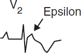
Polymorphic ventricular tachycardia (PMVT)
• QRS morphology changes from beat to beat
• Etiologies: ischemia; CMP; catecholaminergic
torsades de pointes (TdP = “twisting of the points,” PMVT + ↑ QT): ↑ QT acquired (meds, lytes, stroke, see “ECG”) w/ risk ↑ w/ ↓ HR, freq PVCs (pause dependent) or congenital (K/Na channelopathies) w/ resting Tw abnl & TdP triggered by sympathetic stimulation (eg, exercise, emotion, sudden loud noises) (Lancet 2008;372:750)
Brugada syndrome (Na channelopathy; JACC 2018;72:1046): ♂ > ♀; pseudo-RBBB w/ STE in V1–V3 (provoked w/ class IA or IC) on resting ECG
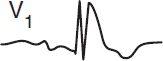
Diagnostic clues that favor VT (assume until proven o/w)
• Prior MI, CHF, or LV dysfunction best predictors that WCT is VT (Am J Med 1998;84:53)
• Hemodynamics and rate do not reliably distinguish VT from SVT
• MMVT is regular, but initially it may be slightly irregular, mimicking AF w/ aberrancy; grossly irregularly irregular rhythm suggests AF w/ aberrancy or pre-excitation
• ECG features that favor VT (Circ 2016;133:e506)
AV dissociation (independent P waves, capture or fusion beats) proves VT
Very wide QRS (>140 ms in RBBB-type or >160 in LBBB-type); extreme axis deviation
QRS morphology atypical for BBB (longest precordial RS >100 ms and R wider than S)
RBBB-type: absence of tall R′ (or presence of monophasic R) in V1, r/S ratio <1 in V6
LBBB-type: onset to nadir >60 ms in V1, q wave in V6
Initial R wave in aVR; concordance (QRS in all precordial leads w/ same pattern/direction)
Long-term management (EHJ 2015;36:2793; Circ 2018;138:e272; NEJM 2019;380:1555)
• Workup: echo to ✓ LV fxn, cath or stress test to r/o ischemia, ? MRI and/or RV bx to look for infiltrative CMP or ARVC, ? EP study to assess for VT in Pts w/o ICD indication
• ICD: 2° prevention for VT/VF arrest (unless due to reversible cause) or cardiac syncope with inducible VT on EP study. 1° prev. if high risk, eg, EF <30–35% (>40 d after MI, >90 d after revasc), ? ARVC, ? Brugada, certain LQTS, severe HCMP. See “Cardiac Rhythm Mgmt Devices.” Wearable vest if reversible or waiting for ICD? (NEJM 2018;379:1205). Antitachycardia pacing (ATP = burst pacing faster than VT) can terminate VT w/o shock.
• Meds: βB, AAD (amio, sotalol, mexiletine); verapamil if LVOT VT
• If med a/w TdP → QT >500 ± PVCs: d/c med, replete K, give Mg, ± pacing (JACC 2010;55:934)
• Ablate: if isolated VT focus or if recurrent VT triggering ICD firing (↓ VT storm by 34%; NEJM 2016;375:111); stereotactic radioablation under investigation (Circ 2019;139:313).
Classification (Circ 2014;130:e199)
• Paroxysmal (terminates spontaneously or within 7 d) vs. persistent (>7 d) vs. long-standing persistent (>1 y) vs. permanent (no plan for SR)
• Nonvalvular vs. valvular (mechanical heart valve or moderate-severe MS)
Epidemiology and etiologies (Circ A&E 2018;11:e006350)
• 1–2% of pop. has AF (10% of those age ≥80); M >F; lifetime risk ~25%; mean age 75 y
• Acute (up to 50% w/o identifiable cause)
Cardiac: HF, new CMP, myo/pericarditis, ischemia/MI, HTN crisis, valve dis., cardiac surg
Pulmonary: acute pulmonary disease or hypoxemia (eg, COPD flare, PNA), PE, OSA
Metabolic: high catecholamine states (stress, infection, postop, pheo), thyrotoxicosis
Drugs: alcohol, cocaine, amphetamines, smoking, ibrutinib
Neurogenic: subarachnoid hemorrhage, ischemic stroke
• Chronic: ↑ age, HTN, ischemia, valve dis. (MV, TV, AoV), CMP, hyperthyroidism, obesity
• Aggressive mgmt of HTN, OSA & EtOH (NEJM 2020;382:20) to ↓ risk
Evaluation
• H&P, ECG, CXR, TTE (LA size, thrombus, valves, LV fxn, pericardium), K, Mg, Cr, TFTs
• In acute AF <48º, ~70% spont. convert to SR w/in 48 hrs (NEJM 2019;380:1499)
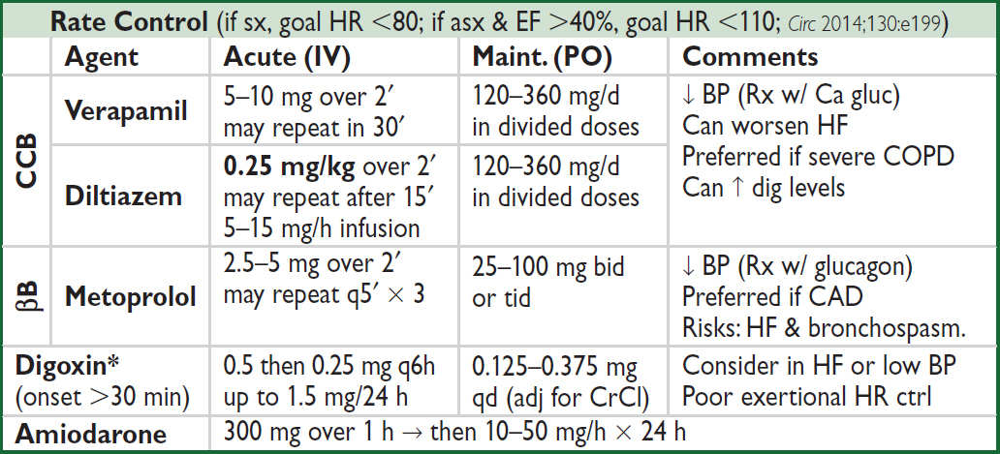
Lancet 2016;388:818. IV βB, CCB & dig contraindic. if evidence (ie, pre-excitation or WCT) of WPW (qv).
*Many meds incl. amio, verapamil, quinidine, propafenone, macrolides & azole antifungals ↑ digoxin levels.
Cardioversion
• Consider if: 1st AF, sx, tachycardia-mediated CMP, or difficult to rate control
If AF >48 h 2–5% risk stroke w/ cardioversion (pharmacologic or electric) ∴ either TEE to r/o thrombus or ensure therapeutic anticoagulation ≥3 wk prior
If needs to cardiovert urgently, often anticoagulate acutely (eg, IV UFH)
• For AF <36 hrs, no Δ in % in SR at 4 wks w/ early cardioversion vs. wait & see (βb + a/c), with spont cardioversion in 69% and cardioversion required in 28% (NEJM 2019;380:1499)
• Likelihood of success ∝ AF duration & atrial size; control precipitants (eg, vol status, thyroid)
• Before electrical cardiovert, consider pre-Rx w/ AAD (eg, ibutilide), esp. if 1st cardiovert failed
• For pharmacologic cardioversion, class III and IC drugs have best proven efficacy
• If SR returns (spont. or w/ Rx), atria may be mech. stunned; also, high risk of recurrent AF over next 3 mo. ∴ Anticoag postcardioversion ≥4 wk (? unless AF <48 h and low risk).
Rhythm control (Lancet 2016;388:829)
• Consider if sx w/ rate control (eg, HF), difficult to control rate, or tachycardia-mediated CMP
• If minimally sx or asx, previously no clear benefit vs. rate control (NEJM 2008;358:2667)
• For recent AF (~1 mo), rhythm-control w/ AAD (flecainide, amio) & cardioversion (if persist. AF) superior to usual care for achieving SR and ↓ adverse CV events (NEJM 2020;383:1305)
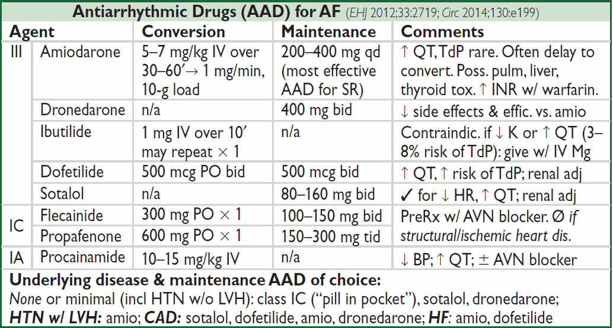
Ablation (Heart Rhythm 2017;14:e445; JACC 2020;75:1689)
• Controlling triggers in pulm veins effective when little atrial fibrosis; as AF persists, substrate more complex
• Pulm vein isolation (radiofreq or cryo; NEJM 2016;374:2235): ~70% success; superior to AAD (JAMA 2014;311:692; NEJM 2021;384:305 & 316) & ↑ QoL (JAMA 2019;321:1059)
• If NYHA II–IV + EF <35%, ablation ↓ D/HF hosp vs. rate/rhythm meds (NEJM 2018;378:417)
• AV node ablation + PPM if other Rx inadequate (NEJM 2001;344:1043 & 2002;346:2062)
Oral anticoagulation (Circ 2014;130:e199 & 2019;140:125; EHJ 2021;42:373)
• All valvular AF because stroke risk very high
• Nonvalvular AF (NVAF): stroke risk ~4.5%/y but varies; a/c → 68% ↓ stroke but ↑ bleeding
• CHA2DS2-VASc to guide Rx: CHF (1 point); HTN (1); Age ≥75 y (2); DM (1), Stroke/TIA (2); Vascular disease (eg, MI, PAD, Ao plaque) (1); Age 65–74 (1); ♀ Sex category (1)
Annual risk of stroke (Lancet 2012;379:648): at low end, ~1% per point: 0 → ~0%, 1 → 1.3%, 2 → 2.2%, 3 → 3.2%, 4 → 4.0%; at higher scores, risk ↑↑ (5 → 6.7%, ≥6 → ≥10%)
• Score 2 in ♂ or 3 in ♀→ anticoagulate; scores 1 in ♂ or 2 in ♀ → consider anticoag or ASA or no Rx; score 0 → reasonable to not Rx
• Rx options: DOAC (NVAF only) prefered over warfarin (INR 2–3); if Pt refuses anticoag, ASA + clopi or, even less effective, ASA alone (NEJM 2009;360:2066)
• AF + CAD/ PCI: consider DOAC + clopi (not ticag or prasugrel) + ASA (d/c ~1–4 wks) (Circ 2021;143:583); consider DOAC only after 12 mos (JACC 2021;77:629)
• If concern for procedural bleed, interrupt OAC (1–2 d DOAC, 4–5 d VKA). If CHA2DS2-VASc ≥7 (or ≥5 w/ h/o CVA/TIA), consider bridge w/ UFH/LMWH, otherwise do not (JACC 2017;69:735).
Direct Oral Anticoagulants (DOACs) for NVAF (Lancet 2014;383:955) |
||
Anticoag |
Dosing |
Efficacy & Safety vs. Warfarin |
Apixaban (FXa inhib) |
5 mg bid (2.5 mg bid if ≥ 2 of: ≥80 y, ≤60 kg, Cr ≥1.5 mg/dL) |
≈ ischemic stroke & ↓ major bleed incl ICH, 11% ↓ death. In Pts felt not cand for warfarin, apixa 55% ↓ stroke w/o ↑ bleed vs ASA alone. |
Rivaroxaban (FXa inhib) |
20 mg qd (15 mg qd if CrCl 15–50) w/ pm meal |
≈ ischemic stroke & major bleeds, but ↓ fatal bleed incl ICH |
Edoxaban (Fxa inhib) |
60 mg qd if CrCl 51–95 (30 mg if CrCl 15–50) |
≈ ischemic stroke & ↓ major bleed incl ICH, 14% ↓ CV death. ↑ ischemic CVA if CrCl >95. |
Dabigatran (Thromb inhib) |
150 mg bid (75 mg bid if CrCl 15–30) |
150 mg: ↓ ischemic stroke & ICH, but ↑ GIB Risks: GI side effects, ↑ MI c/w warfarin |
Onset w/in hrs. Reversal: andexanet for FXa inhib; idarucizumab for dabi; 4F-PCC. |
||
Nonpharmacologic stroke prevent (JACC 2015;66:1497)
• If contraindic. to long-term OAC, consider perc. left atrial appendage (LAA) occlusion (JACC 2022;79:1). Nb, ideally warfarin + ASA × 45 d → DAPT out to 6 mo → ASA.
• Consider surgical LAA occlusion if undergoing cardiac surgery (NEJM 2021;384:2081)
Atrial flutter
• Macroreentrant atrial loop. Typical involves cavotricuspid isthmus (if counterclockwise, flutter waves ⊖ in inf leads, if clockwise, ⊕). Atypical: other pathways related to prior scar.
• Risk of stroke similar to that of AF, ∴ anticoagulate same as would for AF
• Ablation of typical (cavotricuspid isthmus) AFL has 95% success rate
Definition
• Symptom of sudden transient loss of consciousness due to global cerebral hypoperfusion
• If CPR or cardioversion required, then SCD and not syncope (different prognosis)
• Presyncope = prodrome of light-headedness without LOC
Etiologies (JACC 2017;70:e39; EHJ 2018;39:1883)
• Vasovagal (a.k.a. neurocardiogenic, ~25%): ↑ sympathetic tone → vigorous contraction of LV → LV mechanoreceptors trigger ↑ vagal tone (hyperactive Bezold-Jarisch reflex) → ↓ HR (cardioinhib.) and/or ↓ BP (vasodepressor). Cough, deglutition, defecation, & micturition → ↑ vagal tone and thus can be precipitants. Carotid sinus hypersensitivity (exag vagal resp to carotid massage) is related disorder.
• Orthostatic hypotension (~10%)
hypovolemia/diuretics, deconditioning; vasodilat. (esp. if combined w/ ⊖ chronotropes)
autonomic neuropathy [1° = Parkinson’s, MSA/Shy-Drager, Lewy body dementia, POTS (dysautonomia in the young); 2° = DM, EtOH, amyloidosis, CKD] (JACC 2018;72:1294)
• Cardiovascular (~20%, more likely in men than women)
Arrhythmia (~15%): challenging to dx because often transient
Bradyarrhythmias: SB, SSS, high-grade AV block, ⊖ chronotropes, PPM malfunction
Tachyarrhythmias: VT, SVT (syncope rare unless structural heart disease or WPW)
Mechanical (5%)
Endocardial/Valvular: critical AS, MS, PS, prosthetic valve thrombosis, myxoma
Myocardial: outflow obstruction from HCMP (or VT); pericardial: tamponade
Vascular: PE (in ~25% w/o alt dx; NEJM 2016;375:1524), PHT, AoD, ruptured AAA
• Neurologic (~10%): vertebrobasil insuff, cerebrovasc dissection, SAH, TIA/CVA
• Misc. causes of LOC (but not syncope): seizure, ↓ glc, hypoxia, narcolepsy, psychogenic
Workup (etiology cannot be determined in ~40% of cases) (JAMA 2019;321:2448)
• H&P incl. orthostatic VS have highest yield and most cost effective
• R/o life-threatening dx including: cardiac syncope, severe blood loss, PE, SAH
• History (from Pt and witnesses if available)
activity and posture before the incident
precipitating factors: exertion (AS, HCMP, PHT), positional ∆ (orthostatic HoTN), stressors such as sight of blood, pain, emotional distress, fatigue, prolonged standing, warm environment, N/V, cough/deglutition/micturition/defecation (neurocardiogenic), head turning or shaving (carotid sinus hypersens.); arm exercise (subclavian steal)
sudden onset → cardiac; prodrome (eg, diaphoresis, nausea, blurry vision) → vasovagal
associated sx: chest pain, palp., neurologic, postictal, bowel/bladder incontinence, (convulsive activity for <10 sec may occur w/ transient cerebral HoTN & mimic seizure)
• PMH: prior syncope, previous cardiac or neuro dis.; cardiac more likely if >35 y, known structural heart dis., h/o AF, CV prodrome, syncope while supine or exertional, cyanosis
• Medications that may act as precipitants
vasodilators: α-blockers, nitrates, ACEI/ARB, CCB, hydralazine, phenothiazines, antidep.
diuretics; ⊖ chronotropes (eg, βB and CCB)
proarrhythmic or QT prolonging: class IA, IC or III antiarrhythmics (see “ECG”)
psychoactive drugs: antipsychotics, TCA, barbiturates, benzodiazepines, EtOH
• Family history: CMP, SCD, syncope (vasovagal may have genetic component)
• Physical exam
VS incl. orthostatics (⊕ if supine → standing results in ≥20 mmHg ↓ SBP or ≥10 ↓ DBP or SBP <90 mmHg w/in 3 min; POTS if ≥30 bpm ↑ HR w/in 10 min), BP in both arms
Cardiac: HF (↑ JVP, displ. PMI, S3), murmurs, LVH (S4, LV heave), PHT (RV heave, ↑ P2)
Vascular: ✓ for asymmetric pulses, carotid/vert/subclavian bruits; carotid sinus massage to ✓ for carotid hypersens (if no bruits): ⊕ if asystole >3 sec or ↓ SBP >50 mmHg
Neurologic exam: focal findings, evidence of tongue biting
• ECG (abnormal in ~50%, but only definitively identifies cause of syncope in <10%)
Conduction: SB <40 bpm, sinus pauses >3 sec or sinus arrhythmia, AVB, BBB/IVCD
Arrhythmia: ectopy, ↑ or ↓ QT, preexcitation (WPW), Brugada, ε wave (ACM), SVT/VT
Ischemic changes (new or old): atrial or ventricular hypertrophy
• Lab: glc, Hb, HCG (pre-menop ♀), ? D-dimer, ? troponin/NT-proBNP (↓ yield w/o other s/s)
Other diagnostic studies (consider based on results of H&P and ECG)
• Ambulatory ECG monitoring: if suspect arrhythmogenic syncope
Holter monitoring (continuous ECG 24–72 h): useful if frequent events
Event recorder (activated by Pt to record rhythm): limited role if LOC w/o prodrome
External loop recorder (continuously saves rhythm, ∴ can be activated after an event): useful for episodes (including w/o prodrome) likely to occur w/in 2–6 wks; can be coupled w/ mobile cardiac telemetry than can be auto-triggered for specific rhythms
External patch recorder (1-lead recording; saves for 1–4 wks): Pt-activated or auto-triggered; more comfortable for Pts
Implantable loop recorders (SC; can record 2–3 y; can be triggered): useful if episodes <1/mo; dx in 55% of cases; recommended for recurrent syncope w/o prodrome
• Echo: consider to r/o structural heart disease (eg, CMP [incl HCMP & ARVC], valvular disease [incl AS, MS, MVP], myxoma, amyloid, PHT, ± anomalous coronaries)
• ETT/CCTA/Cath: esp. w/ exertional syncope; r/o ischemia or catechol-induced arrhythmia
• Electrophysiologic studies (EPS): consider in high-risk Pts in whom tachy or brady etiology is strongly suspected (eg, prior MI), but cannot be confirmed; avoid if ECG/Echo normal.
50% abnl (inducible VT, conduction abnormalities) if heart disease, but ? significance
3–20% abnl if abnl ECG; <1% abnl if normal heart and normal ECG
• Tilt table: debated utility due to poor Se/Sp/reproducibility; consider if suspected neuro- cardiogenic, orthostatic HoTN, POTS, or psychogenic, and initial eval unrevealing
• Cardiac MRI: helpful to dx sarcoid or ARVC if suggestive ECG, echo (RV dysfxn) or ⊕ FHx
• Neurologic studies (cerebrovascular studies, CT, MRI, EEG): if H&P suggestive; low yield
(Adapted from JACC 2017;70:e39)
High-risk features (admit w/ tele; JACC 2017;70:620; EHJ 2018;39:1883)
• Age >60 y, h/o CAD, HF/CMP, valvular or congenital heart dis., arrhythmias, FHx SCD
• Syncope c/w cardiac cause (⊖ prodrome, exertional, supine, trauma) or recurrent
• Complaint of chest pain or dyspnea; abnl VS, cardiac, pulm, or neuro exam; low Hct
• ECG suggesting conduction abnormality, arrhythmia, or ischemia; Pt w/ PPM/ICD
• Canadian Syncope Risk Score (CMAJ 2016;188:e289) stratifies from <1% to >20% risk of serious arrhythmias. If low-risk & no arrhythmia in ED × 2 h, 0.2% risk over 30 d.
Treatment (JACC 2017;70:620 & 2019;74:2410; EHJ 2018;39:1883)
• Arrhythmia, cardiac mechanical or neurologic syncope: treat underlying disorder, ? ICD if Brugada pattern, sarcoid, ARVC, early repol + syncope
• Vasovagal: avoidance of triggers; physical counterpressure; consider ↑ Na & fluid intake, fludrocortisone or midodrine (JACC 2016;68:1; Ann Intern Med 2021;174:1349); SSRI; ? βB;
consider PPM if recurrent + pauses on recorder or tilt test (EHJ 2021;42:508)
• Orthostatic: 2–3 L fluid & 10 g Na per day; rise from supine to standing slowly, compression stockings; consider: midodrine, fludrocortisone, droxidopa, ? pyridostigmine, ? octreotide
Prognosis (Ann Emerg Med 1997;29:459; NEJM 2002;347:878)
• 22% overall recurrence rate if idiopathic, else 3% recurrence
• Cardiac syncope has poor prognosis (20–40% 1-y SCD rate); vasovagal good prognosis
• Unexplained syncope w/ 1.3-fold ↑ in mort., but noncardiac or unexplained syncope w/ nl
ECG, no h/o VT, no HF, age <45 → low recurrence rate and <5% 1-y SCD rate
• ✓ state driving laws and MD reporting requirements. Consider appropriateness of Pt involvement in exercise/sport, operating machinery, high-risk occupation (eg, pilot).
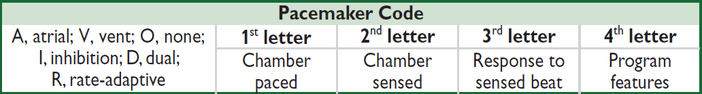
Common Pacing Modes |
|
VVI |
Ventricular pacing on demand w/ single lead in RV. Sensed ventricular beat inhibits V pacing. Used in chronic AF with symptomatic bradycardia. |
DDD |
A & V sensing/pacing (RA & RV leads). Native A beat inhib A pacing & triggers V pacing → tracking of intrinsic atrial activity. Maintains AV synchrony, ↓ AF. |
Mode Switch |
In atrial tachyarrhythmia (eg, AF), PPM ∆s from DDD to nontracking mode (eg, VVI). Prevents PPM from pacing at max V rate in response to rapid atrial rate. |
Magnet over generator |
PPM: fixed rate pacing (VOO/DOO). ICD: no shock, pacing preserved. Indic: ✓ capture; surgery; inapprop PPM inhib/ICD shock, PM-mediated tachy |
Leadless intracardiac PPM for RV or AV synchronous pacing (JACC Clin EP 2020;6:94). His or L bundle pacing: more physiologic than RV pacing or even CRT (JACC 2018;72:927). |
|
Indications for Permanent Pacing (JACC 2013;61:e6 & 2017;70:e39, Circ 2019;140:e382) |
|
AV block |
2° type II, high-grade or 3° AVB; symptomatic 1°, 2° type I AVB or asx with Lamin A/C or neuromuscular disease; bifasc or alter. L & RBBB |
Sinus node |
SB, pauses (SSS), chronotrop incompet a/w sx or ? if sx w/o clear assoc |
Tachy-arrhythmia |
AF w/ SSS; sx recurrent SVT term. by pacing after failing drugs/ablation; Sustained pause-dependent VT; ? high-risk congenital long QT |
Syncope |
Carotid sinus hypersensitivity with asystole >3 sec Syncope with bi- or trifascicular block and HV>70 ms on EP study ? Recurrent vasovagal syncope w/ abnormal tilt test (JACC 2017;70:1720) |
Pacemaker Complications |
||
Issue |
Manifestation |
Description & etiologies |
Perforation |
Effusion/tamp/pain |
Typically acute, consider if HoTN |
Failure to pace |
Bradycardia |
↓ Battery, lead fx/dislodgment, ↑ pacing threshold due to tissue rxn/injury; oversense → inapprop. inhib |
Failure to sense |
Inapprop. pacing |
Lead dislodgment or sensing threshold too high |
PM-mediated tachycardia |
WCT at device upper rate |
Seen w/ DDD. V → A retrograde conduction; sensed by A lead → triggers V pacing → etc. |
PM syndrome |
Palpit, HF |
Seen w/ VVI, due to loss of AV synchrony |
Cardiac resynch therapy (CRT)/Biventricular (BiV) pacing (JACC 2013;61:e6)
• 3-lead pacemaker (RA, RV, coronary sinus to LV); R >S in V1 suggests approp LV capture
• Synch LV fxn (↑ CO/EF, ↓ adv remodeling); ↓ HF sx & hosp, ↑ survival (NEJM 2010;363:2385)
• Indications: LVEF ≤35% + NYHA II–IV despite med Rx + SR + LBBB ≥150 ms (also reasonable if LBBB ≥120 ms, any non-LBBB ≥150 ms, or >40% V-pacing); mort. benefit w/ CRT-D only if LBBB (& QRS ≥130 ms) (NEJM 2014;370:1694)
? benefit in NYHA I–III, EF ≤50% w/ PPM indication for AVB (NEJM 2013;368:1585)
Implantable cardiac defibrillator (ICD) (Circ 2019;140:e382)
• RV lead: defib & pacing (± antitachycardia pacing [ATP] = burst pacing > VT rate to stop VT); ± RA lead for dual-chamber PPM. Subcut-ICD (consider if young), but Ø pace/ATP.
• 2° prev: survivors of VT/VF arrest w/o revers cause; asx sustained VT + struct. heart dis.
• 1° prev: IHD (wait ≥40 d after MI): LVEF ≤30% or ≤35% & NYHA II–III or ≤40%, spont NSVT & inducible. NICM (wait ≥90 d after starting GDMT): LVEF ≤35% & NYHA II–III. High-risk CMP (w/o meeting above criteria): HCM, ACM, sarcoid, laminopathy, Chagas. Channelopathies: LQTS or Brugada if syncope or high-risk. ACHD: if SCD risk factors.
More recently, for niCMP ICD ↓ SCD but not overall mortality (NEJM 2016;375:1221).
Life expectancy must be >1 y.
• Wearable vest as bridge while waiting for ICD, but no benefit in RCT (NEJM 2018;379:1205)
• Subcutaneous ICD non-inferior in patients without PPM indication (NEJM 2020;383:526)
• Risks: inapprop shock in ~15–20% at 3 y (commonly d/t misclassified SVT); infxn; lead fx
• ICD discharge: ✓ device to see if approp; r/o ischemia; 6-mo driving ban (✓ state law)
• MRI: new devices OK; older may be OK (NEJM 2017;377:2555). Consult prescan.
Device infection (Heart Rhythm 2017;14:e503, NEJM 2019;380:1895)
• Presents as pocket infection (warmth, erythema, tenderness) and/or sepsis w/ bacteremia
• ~2% over 5 y; if S. aureus bacteremia, infxn in ≥35%; antibacterial envelope ↓ risk
• TTE/TEE used to help visualize complic. (eg, vegetation), but even ⊖ TEE does not r/o
• Rx: abx; system removal if pocket infxn or GPC bacteremia; Ø routine abx prior to inv. proc.
Goal: characterize risk of Pt & procedure → appropriate testing (ie, results will ∆ management) and interventions (ie, reasonable probability of ↓ risk of MACE)
Preoperative evaluation (Circ 2014;130:e278, NEJM 2015;373:2258, JAMA 2020;324:279)
(Modified with permission Circulation. 2014;130:2215-2245 © 2014 American Heart Association, Inc.)
Noninvasive Testing Result |
||
High Risk |
Intermediate Risk |
Low Risk |
Ischemia at <4 METs manifested by ≥1 of: • Horiz/down ST ↓ ≥1 mm or STE • ≥5 abnl leads or ischemic ECG ∆s • lasting >3 min after exertion • SBP ↓ 10 mmHg or typical angina |
Ischemia at <4–6 METs manifested by ≥1 of: • Horiz/down ST ↓ ≥1 mm • 3–4 abnl leads • 1–3 min after exertion |
No ischemia or at <7 METs w/ • ST ↓ ≥1 mm or • 1–2 abnl leads |
Additional preoperative testing (Circ 2014;130:e278)
• ECG if known cardiac disease and possibly reasonable in all, except if low-risk surgery
• TTE if any of following & prior TTE >12 mo ago or prior to ∆ in sx: dyspnea of unknown origin; hx of HF w/ ↑ dyspnea; suspect (eg, murmur) or known ≥moderate valvular dis.
Coronary artery disease
• If possible, wait ~60 d after MI in the absence of revascularization before elective surgery
• Coronary revasc guided by standard indications. Has not been shown to ∆ risk of death or postop MI when done prior to elective vasc. surgery (NEJM 2004;351:2795).
Heart failure (Circ 2014;130:e278)
• Decompensated HF should be optimally Rx’d prior to elective surgery
• 30-d CV event rate: symptomatic HF >asx HFrEF >asx HFpEF >no HF
Valvular heart disease
• If meet criteria for valve intervention, do so before elective surgery (postpone if necessary)
• If severe valve disease and surgery urgent, intra- & postoperative hemodynamic monitoring reasonable (espec for AS, because at ↑ risk even if sx not severe; be careful to maintain preload, avoid hypotension, and watch for atrial fibrillation)
Cardiac implantable electronic devices
• Discuss w/ surgical team need for device (eg, complete heart block) & consequences if interference w/ fxn, and likelihood of electromagnetic interference
• Consider reprogramming, magnet use, etc. as needed
Pre- & perioperative pharmacologic management
• ASA: continue in Pts w/ existing indication. Initiation prior to surgery does not ↓ 30-d ischemic events and ↑ bleeding (NEJM 2014;370:1494), but Pts w/ recent stents excluded.
• Dual antiplatelet therapy: delay elective surg 14 d after balloon angioplasty, 30 d after BMS and ideally 6 mo (min 3 mo) after DES (JACC 2016; 68:1082) unless risk of bleeding > risk of stent thrombosis or ACS. If must discontinue P2Y12 inh, continue ASA and restart P2Y12 inh ASAP; can consider IV cangrelor if high-risk (JAMA 2012;307:265).
• β-blockers (JAMA 2020;324:279)
Continue βB in Pts on them chronically. Do not stop βB abruptly postop (may cause reflex sympathetic activation). Use IV if Pt unable to take PO.
Reasonable to initiate if intermed- or high-risk ⊕ stress test, or RCRI ≥3, espec if vasc surgery. Initiate ≥1 wk prior to surgery (not day of), use low-dose, short-acting βB, and titrate to achieve HR and BP goal (? HR ~55–65). Avoid bradycardia and HoTN.
• Statins: ↓ ischemia & CV events in Pts undergoing vascular surg (NEJM 2009;361:980). Consider if risk factors & non–low-risk surgery and in all Pts undergoing vascular surgery.
• ACEI/ARB: holding 24 h preop to ↓ intraop HoTN (Anes 2017;126:16). Restart ASAP.
• Amiodarone: ↓ incidence of postop AF if started prior to surgery (NEJM 1997;337:1785)
Postoperative monitoring
• ECG if known CAD or high-risk surgery. Consider if >1 risk factor for CAD.
• Routine troponin prognostic (JAMA 2017;317:1642) but ✓ only if sx/ECG ∆s suggestive of ACS
Clinical features (NEJM 2016;374:861, Circ 2021;144:e171)
• Prev. ↑ w/ age: <1% if <40 y, ~15% if ≥70 y; risk factors incl. smoking, DM, HTN, chol
• Claudication (ache/cramp, often in calves) precip by walking and relieved by stopping (vs. spinal stenosis, qv); Leriche synd = claudic., ↓ or Ø fem pulses, & erectile dysfxn
• Critical limb ischemia (CLI): rest pain (↑ w/ elevation b/c ↓ perfusion), ulcer (typically at pressure foci, often dry; in contrast, venous ulcers are more often at medial malleolus, wet, and with hemosiderin deposition) or gangrene, due to PAD, and >2-wk duration (implies chronicity vs. acute limb ischemia; see below) (Circ 2019;140:e657)
Diagnosis (Circ 2016;135:e686, JAMA 2021;325:2188)
• ↓ peripheral pulses, bruits; signs of chronic PAD: hair loss, skin atrophy, nail hypertrophy
• Ankle: brachial index (ABI): nl 1–1.4; borderline 0.91–0.99; abnl ≤0.90; if >1.4, non-dx possibly due to calcified noncompressible vessel → ✓ PVR, TBI (toe-brachial index). If ABI abnl → segmental ABI w/ PVR to localize disease. If ⊕ sx but nl ABI, ✓ for ↓ lower extrem BP after exercise (≥20% ↓ in ABI w/ exercise or ≥30 mmHg ↓ in ankle pressure).
• Duplex arterial U/S; CTA w/ distal run-off; MRA or angio if dx in ? or possible intervention
Treatment (JACC 2013;61:1555, Circ 2021;144:e171, JAMA 2021;325:2188)
• Risk factor modif. Screen for CAD/AAA. Structured high-intensity walking (JAMA 2021;325:1266).
• If sx or if asx with ABI ≤0.90, ASA, clopi, or ticag to ↓ D/MI/stroke (NEJM 2017; 376:32). More intensive antiplt Rx ↓ both MACE & limb ischemic events (JACC 2016;67:2719). Adding riva 2.5 mg bid to ASA ↓ MACE but ↑ bleeding (Lancet 2018;391:219; NEJM 2020;382:1994).
• Statins & PCSK9i ↓ MACE & limb ischemic events (Circ 2018;137:338). Cilostazol (if no HF).
• Endovascular (angioplasty vs. stent) or surgical revasc if limiting/refractory sx or CLI
Acute limb ischemia (ALI) (Circ 2016;135:e686)
• Sudden decrement in limb perfusion (ie, acutely cold & painful) that threatens viability
• Etiologies: embolism > acute thrombosis (eg, athero, APS, HITT), trauma to artery
• Clinical manifestations (6 Ps): pain (distal to proximal, ↑ in severity), poikilothermia, pallor, pulselessness, paresthesias, paralysis
• Testing: pulse & neuro exam; arterial & venous Doppler; angiography, CTA or MRA
• Urgent consultation w/ vascular medicine and/or vascular surgery
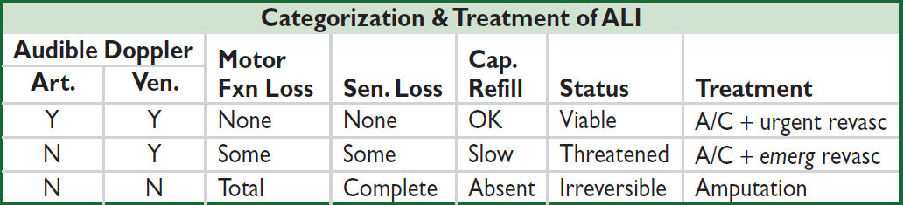